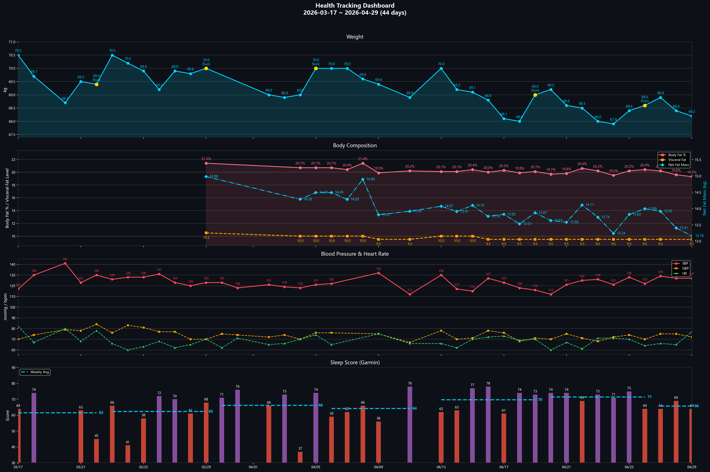

70 → 65 kg | Normalize 4 Key Markers Simultaneously | March 2026 Personalized Edition70 → 65 kg | 同步正常化 4 項關鍵指標 | 2026 年 3 月個人化版
Bedtime: 20:30
Actual Sleep: 5–6 hours (wakes at 2–4 AM for nocturia, often unable to fall back asleep)
Garmin Data: Sleep Score 63 / Body Battery waking at 40–50
Blood Pressure: Isolated Systolic Hypertension (ISH) — 135/75 mmHg, pulse pressure 60 (normal 30–40), reflecting reduced large artery elasticity
Other Mildly Elevated Markers: Triglycerides, cholesterol, uric acid
Current Supplements: Omega-3 fish oil rTG (split 2g+2g), tart cherry, hibiscus-goji tea (afternoon). Expanding to: L-Citrulline, Creatine, D3K2, Chelated Magnesium, NAC, Whey Protein — see Supplements tab.
5–6 hours of actual sleep + Body Battery only 40–50 means sleep deprivation is undermining all metabolic repair from the ground up. If sleep isn't fixed, even a perfect diet and exercise regimen will only deliver 50% of its potential.
Action Priority: (1) Sleep repair + OSA screening → (2) Shift hydration earlier → (3) Wall sits → (4) Diet adjustments → (5) Supplements
Your four elevated markers share the same metabolic root. Each intervention below stacks on top of the others:
| Intervention | Est. Systolic BP Reduction | Notes |
|---|---|---|
| Wall sits 3×/week | −10 to −13 mmHg | Visible in 12 weeks; equivalent to one BP medication |
| Sodium < 1,500 mg/day | −5 to −8 mmHg | Sodium impacts systolic more than diastolic |
| Omega-3 ~2g/day | −4 to −5 mmHg | Preferentially lowers systolic |
| Sleep repair to 7+ hours | −3 to −5 mmHg | Reduces sympathetic overactivation |
| Weight loss of 5 kg | −3 to −5 mmHg | ~1 mmHg per kg lost |
| Combined Potential | −25 to −36 mmHg | 135 → 99–110 range |
Important: Your diastolic is already 75. Some BP drugs lower both systolic and diastolic, risking diastolic going too low (< 60). Lifestyle intervention first is the optimal strategy.
就寢時間：20:30
實際睡眠：5–6 小時（凌晨 2–4 點因夜尿醒來，常無法再入睡）
Garmin 數據：Sleep Score 63 / Body Battery 起床值 40–50
血壓：單純收縮期高血壓（ISH）— 135/75 mmHg，脈壓差 60（正常 30–40），反映大動脈彈性下降
其他輕度異常指標：三酸甘油酯、膽固醇、尿酸
目前保健品：高濃度 Omega-3 魚油（rTG 型）、枸杞茶 20g/天
實際睡眠僅 5–6 小時 + Body Battery 只有 40–50，代表睡眠不足正在從根基破壞所有代謝修復。如果不先修好睡眠，即使完美的飲食和運動計畫也只能發揮 50% 的效果。
行動優先順序：(1) 睡眠修復 + OSA 篩檢 → (2) 提前補水時間 → (3) 靠牆深蹲 → (4) 飲食調整 → (5) 保健品
你的四個異常指標共享相同的代謝根源。以下每項介入效果可以疊加：
| 介入措施 | 預估收縮壓降幅 | 備註 |
|---|---|---|
| 靠牆深蹲 3次/週 | −10 至 −13 mmHg | 12 週可見效；等同一種降壓藥 |
| 鈉攝取 < 1,500 mg/天 | −5 至 −8 mmHg | 鈉對收縮壓影響大於舒張壓 |
| Omega-3 ~2g/天 | −4 至 −5 mmHg | 優先降低收縮壓 |
| 睡眠修復至 7+ 小時 | −3 至 −5 mmHg | 降低交感神經過度活化 |
| 減重 5 公斤 | −3 至 −5 mmHg | 每減 1 kg 約降 1 mmHg |
| 合併效果 | −25 至 −36 mmHg | 135 → 99–110 範圍 |
重要：你的舒張壓已經只有 75。部分降壓藥會同時降低收縮壓和舒張壓，可能讓舒張壓過低（< 60）。生活方式介入優先是最佳策略。
Lies down at 20:30 → Wakes at 2–4 AM for nocturia → Feels alert after using the bathroom → Gets up to work instead of returning to sleep → Actual sleep only 5–6 hours.
Sleep Score 63 (needs improvement); Body Battery waking value only 40–50 (normal should be ≥75).
Metabolic damage from 5–6 hours of sleep: Hypertension risk increases ~3.5×; gene expression for cholesterol metabolism is suppressed; cortisol stays elevated from early waking activity, stimulating the liver to produce more triglycerides and VLDL; uric acid excretion efficiency drops under dehydration.
Goal: Delay nocturia from 2–4 AM to 5:00–5:30, then get up directly after urinating, achieving 8.5–9 hours of sleep.
Your risk profile checks nearly every box: male, borderline elevated BMI, hypertension, dyslipidemia, frequent nocturia, adequate sleep duration but extremely poor recovery. OSA alone can simultaneously drive up blood pressure, triglycerides, cholesterol, and uric acid.
1. Enable Garmin Pulse Ox sleep monitoring tonight; observe for 5–7 nights whether SpO2 frequently drops below 90%
2. Use a phone recording app overnight to check for snoring/apnea episodes
3. Book an appointment at a sleep clinic (pulmonology or ENT), and simultaneously see urology for nocturia evaluation
4. Bring Garmin data (Sleep Score, Body Battery, Pulse Ox) to your doctor
Cognitive Behavioral Therapy for Insomnia (CBT-I) is recommended by sleep medicine guidelines as the first-line treatment before medication. Key behavioral interventions ranked by evidence strength:
| Rank | Intervention | Mechanism | Your Application |
|---|---|---|---|
| 1 | Sleep restriction | Build sleep pressure (adenosine) by limiting time in bed to actual sleep time — the strongest single CBT-I component | You are already doing this: do not go to bed before 20:00; do not stay in bed past 5:30 even if awake |
| 2 | Stimulus control | Re-associate bed with sleepiness only, not wakefulness or work | No phone/computer in bed. If awake >20 min, get up for stretching only (no screen). Bed = sleep only. |
| 3 | Sleep hygiene | Environmental and behavioral conditions that support sleep | Blackout curtains, room temp 18–20°C, no caffeine after 14:00, 17:00 fluid cutoff, consistent wake time |
| 4 | Relaxation techniques | Reduce pre-sleep arousal and cortisol | 4-7-8 breathing (inhale 4s → hold 7s → exhale 8s). Leg elevation 15 min before bed. No news/work email after 19:00. |
| 5 | Cognitive restructuring | Reduce performance anxiety about sleep | "Quiet rest in bed provides ~50% recovery benefit even without sleep." Stop watching the clock. |
Fructose → ATP depletion → uric acid → NADPH oxidase → mitochondrial stress → disrupted sleep architecture. Eliminating evening sugary drinks is not just metabolic — it directly improves deep sleep quality. The chain: no late fructose → lower nocturnal UA → less oxidative stress → better slow-wave sleep.
Track with Garmin: Sleep Score (target ≥70 → advanced ≥80), Body Battery waking value (target ≥65 → advanced ≥75), deep sleep percentage (target >15%), Pulse Ox overnight SpO2 stability.
2-Week Experiment: Strictly follow "no leaving bed before 5:30 + fluid cutoff at 17:00 + pre-bed leg elevation" and compare before/after Sleep Score and Body Battery averages.
20:30 躺下 → 凌晨 2–4 點因夜尿醒來 → 上完廁所後精神清醒 → 起床工作而非回去睡 → 實際睡眠僅 5–6 小時。
Sleep Score 63（需改善）；Body Battery 起床值僅 40–50（正常應 ≥75）。
5–6 小時睡眠的代謝傷害：高血壓風險增加約 3.5 倍；膽固醇代謝基因表達被抑制；過早清醒活動使皮質醇持續偏高，刺激肝臟產生更多三酸甘油酯和 VLDL；脫水狀態下尿酸排泄效率下降。
目標：將夜尿從凌晨 2–4 點延後至 5:00–5:30，上完廁所直接起床，達成 8.5–9 小時睡眠。
你的風險因子幾乎全中：男性、BMI 偏高、高血壓、血脂異常、頻繁夜尿、睡眠時間足夠但恢復極差。單獨 OSA 就能同時推升血壓、三酸甘油酯、膽固醇和尿酸。
1. 今晚開啟 Garmin Pulse Ox 睡眠監測；觀察 5–7 晚 SpO2 是否頻繁低於 90%
2. 用手機錄音 app 整夜錄音，檢查打鼾/呼吸暫停
3. 預約睡眠門診（胸腔科或耳鼻喉科），同時掛泌尿科評估夜尿
4. 帶 Garmin 數據（Sleep Score、Body Battery、Pulse Ox）給醫師看
用 Garmin 追蹤：Sleep Score（目標 ≥70 → 進階 ≥80）、Body Battery 起床值（目標 ≥65 → 進階 ≥75）、深度睡眠比例（目標 >15%）、Pulse Ox 整夜 SpO2 穩定性。
2 週實驗：嚴格執行「5:30 前不離床 + 17:00 停止大量補水 + 睡前抬腿」，比較前後 Sleep Score 和 Body Battery 平均值。
2025 research confirms that DASH diet combined with Omega-3 addresses everything at once: LDL −31.7 mg/dL, triglycerides −45.3 mg/dL, systolic BP −14.7 mmHg, uric acid −1.3 mg/dL (in those with baseline ≥6).
Protein "source" matters more than "total amount": NHANES III data shows total protein intake has no significant correlation with uric acid (p=0.74). High red meat consumers have uric acid +0.48 mg/dL higher, while dairy intake actually lowers it by −0.21 mg/dL.
| Item | Target | Notes |
|---|---|---|
| Daily Calories | 1,950–2,050 kcal (base) / 2,100–2,200 kcal on exercise days | Remaining plan: 68 → 65 kg in 5 months = -0.6 kg/month (≈150 kcal/day deficit). Status: ahead of schedule (hit Month 2 target at Day 35). Going forward eat slightly more than recent pattern to slow the rate — post-lunch walk + wall sit burns ~220 kcal; eat back fully with banana + 20g nuts snack. |
| Protein | 95g (range 85–115g) | Sweet spot: 95g (mid-range). Weight-loss phase for lean mass preservation (age 37). Distribute ~30–32g/meal to cross the leucine threshold for MPS. Source priority: dairy → eggs → tofu/soy → fish → chicken breast; avoid red meat & organ meats (NHANES III: source matters more than total; p=0.74 for total-UA correlation). Hard upper ~130g (1.9g/kg) — beyond this diminishing returns + displaces fat/carb budget. |
| Fat | 50–65g (25–33%) | Sweet spot: 55–60g. Hard floor 50g — below this, D3/K2 absorption drops (fat-soluble), ω-3/ω-6 deficiency risk, testosterone impact. Primarily monounsaturated (olive oil, nuts, avocado); Omega-3 rTG ≥2g/day from fish or supplement. |
| Carbohydrates | 150–225g (33–50%) | Sweet spot: 170–200g (HbA1c 5.9% friendly range). Hard floor 130g — brain glucose requirement + muscle glycogen for wall sits + thyroid T3 conversion. Complex carbs (brown rice, quinoa, sweet potato, oats); avoid refined starches. |
| Sodium | < 1,500 mg (ideal) / < 2,000 mg (hard cap) | ISH systolic BP is especially sodium-sensitive. Check every packaged item's label before buying. |
| Dietary Fiber | 25–35g | Sweet spot: 28–32g. Above 40g risks mineral malabsorption (Fe, Zn, Ca) + GI discomfort. Oat β-glucan 3g/day lowers LDL 5–10%. |
| Water Intake | 2.5–3.0 L | Complete main hydration before 17:00 to prevent nocturia. |
Each macro has a hard floor and upper ceiling. Going past fiber/protein targets while cutting fat/carbs further is not optimization, it's breaking the floor. If already in sweet spot mid-range, the next lever is (1) swap fat source quality (saturated → MUFA/ω-3), (2) swap carb timing & type (refined → complex low-GI), or (3) add muscle mass via progressive resistance — not further macro cuts.
Daily post-lunch walk (30 min) + wall sit (8–16 min) burns ~220 kcal (non-training day) or ~350–430 kcal (full training day). Without offset, real deficit jumps to 450–600 kcal/day → projects to ~8–11 kg loss over 6 months, breaching healthy floor. On exercise days, eat back ~200 kcal via banana + 20g nuts to maintain sustainable 250 kcal/day deficit.
Current sandwich + unsweetened soy milk base is good. Fine-tune: swap fried egg for boiled egg to reduce fat; halve the sauce or skip mayo entirely.
One daily hot latte: Use low-fat milk, ~120–150 kcal. Milk casein promotes uric acid excretion; coffee chlorogenic acid is associated with reduced gout risk. If having a latte, swap out soy milk to keep breakfast total ≤400 kcal. Best at 9–10 AM; drink 300–400 mL of warm water first.
| Rotation | Items | ~Calories | Highlight |
|---|---|---|---|
| A: Sweet Potato Classic | Baked sweet potato + tea egg + unsweetened soy milk | ~350 kcal | Low GI + low-purine protein |
| B: Improved Sandwich | Grilled chicken veggie sandwich (light sauce) + unsweetened soy milk | ~360 kcal | Grilled chicken replaces fried egg |
| C: Latte Day | Tea eggs ×3 + low-fat hot latte | ~440 kcal | 3 eggs = ~19.5g protein, crosses 2.5–3g leucine threshold for MPS; dairy promotes uric acid excretion |
| D: High Fiber | Unsweetened Greek yogurt + banana + small nut pack | ~380 kcal | Beta-glucan lowers LDL |
| E: Oatmeal Power | 桂格燕麥片 40g + boiled egg + unsweetened soy milk 300ml + nuts 10g | ~390 kcal | β-glucan 3g lowers LDL 5–10%; pair with protein to slow glucose spike |
Serving: 40–50g dry oats (~150–180 kcal). Brew with hot water or hot unsweetened soy milk; do NOT add sugar — use a pinch of cinnamon for flavor.
Must pair with protein (egg, soy milk, or Greek yogurt) — eating oats alone still causes a moderate glucose spike.
Hydration: β-glucan (soluble fiber) needs adequate water to work — drink ≥300 mL alongside your bowl.
Sodium check: If using the "機能" (functional) series with added ingredients, check the label sodium — some flavored packets can exceed 200 mg/serving.
Selection principles: Check labels for sodium < 800 mg, choose purple/brown rice, pick grilled or steamed chicken breast, add a side salad for vegetables (use half the dressing).
Always flip to the back and check the "Sodium" line. The items below have been verified via actual nutrition labels and are relatively safe choices.
| Item | Calories | Sodium | Protein | Notes |
|---|---|---|---|---|
| 香烤雞胸鮮蔬餐 (Grilled Chicken Breast Fresh Veggie Meal) | ~374 kcal | ~577mg | ~18.4g | Purple rice, broccoli, carrot, king oyster mushroom, boiled egg. ~$89. Best first choice |
| 雞胸肉花椰菜飯減醣餐 (Chicken Breast Cauliflower Rice Low-Carb Meal) | ~319 kcal | ~500-700mg | ~20+g | Cauliflower rice replaces white rice, beneficial for triglyceride management |
| 豆酥烤魚鮮蔬便當 (Crispy Bean-Crusted Fish Fresh Veggie Box) | ~437 kcal | ~600-800mg | ~18g | Purple rice, pan-fried fish, broccoli, edamame, bean sprouts |
| 繽紛鮮蔬烤雞便當 (Colorful Veggie Roast Chicken Box) | ~370 kcal | ~550-700mg | ~18g | Purple rice, skinless roast chicken, assorted vegetables |
香草烤雞腿時蔬餐 (Herb Roast Chicken Leg Veggie Meal) — sodium ~987mg, exceeds limit. 增肌蛋白餐 (Muscle-Building Protein Meal) — 595 kcal too high and sodium >900mg.
| Item | Calories | Sodium | Protein | DASH Rating |
|---|---|---|---|---|
| 即食雞胸肉 (Ready-to-Eat Chicken Breast, plain) | ~104-115 kcal | ~300-450mg | ~22-24g | Recommended |
| 法式舒肥嫩雞胸 (French Sous Vide Chicken Breast) | ~104 kcal | Per label | ~22g | Recommended |
| 茶葉蛋 (Tea Egg) | ~70-80 kcal | ~200-229mg | ~6.5g | OK (limit 1/meal) |
| 蒸地瓜 (Steamed Sweet Potato, ~100-150g) | ~100-150 kcal | ~15-30mg | ~2g | Best Carb Ultra-low sodium, high potassium |
| 鹽味毛豆 (Salted Edamame) | ~97 kcal | ~315mg | ~7.9g | Recommended Best legume snack |
| Item | Sodium/100g | Rating | Notes |
|---|---|---|---|
| 板豆腐 (Firm Tofu, plain) | ~2mg | Excellent | Nearly zero sodium, high calcium 140mg |
| 嫩豆腐 (Silken Tofu, plain) | ~45mg | Excellent | Low sodium, low calorie |
| 五香豆干 (Five-Spice Dried Tofu) | ~445mg | Small amount OK | Base is already high, control portions |
| 涼拌豆腐 (Cold Tofu with sauce) | ~350-650mg | Use half sauce | Sauce packet is the key variable |
| 滷豆干 (Braised Dried Tofu) | ~600-900+mg | Avoid | Soaks up sodium from soy sauce braising liquid |
| 百頁豆腐 (Hundred-Layer Tofu) | High | Avoid | High fat, high sodium — worst tofu choice |
| 雞蛋豆腐 (Egg Tofu) | Very high | Avoid | Made with salted soy sauce; sodium is 150x regular tofu |
| Item | Calories | Sodium | Protein | Notes |
|---|---|---|---|---|
| 義美無加糖厚濃豆奶 (I-Mei Unsweetened Rich Soy Milk) | ~228 kcal | ~30-50mg | ~21.2g | Highest protein |
| 光泉無加糖濃豆漿 (Kuang Chuan Unsweetened Dense Soy Milk) | ~190 kcal | ~30-50mg | ~19.1g | High protein, low sodium |
| 光泉無加糖黑豆漿 (Kuang Chuan Unsweetened Black Soy Milk) | ~142 kcal | ~30-50mg | ~14g | Low-cal option; black soy may aid uric acid |
| 健康穀物豆漿 (Healthy Grain Soy Milk, 400ml) | ~140 kcal | ~100mg | ~12g | Certified health claim for blood lipid regulation |
| Unsweetened tea | 0 kcal | ~0mg | 0g | Zero burden |
Zero sugary drinks, zero fructose all day. Each drink is chosen to hit a specific metabolic target. Updated 2026-04-21: Matcha consolidated to a single lunch latte; NOW EGCG capsule discontinued; Hibiscus tea separated from goji.
| Time | Drink | Metabolic Target |
|---|---|---|
| Breakfast | Yogurt blend (no matcha; cacao 5–10g + L-citrulline 2g) | Cocoa flavanols (BP + FMD) + NO precursor; probiotics in yogurt |
| ~9:30 (after breakfast) | Hibiscus tea cup 1 (hibiscus calyx 2g / 240 mL) | BP −7.58 mmHg meta (Serban 2015) + LDL −12% (Mozaffari-Khosravi 2009) + UA (XO inhibition) |
| Morning | Water 500–700 mL | Base hydration + renal uric acid clearance |
| 11:30 (pre-lunch) | Psyllium husk 5g + 240–350 mL water | LDL −9.69 mg/dL meta (Jovanovski 2018); bile acid binding |
| Lunch 12:00 | Self-made italian matcha latte 400 mL (matcha 2–3g + whole milk ~300 mL, unsweetened) | Only matcha source all day. EGCG ~48–95 mg (sub-RCT dose; role = sugar-drink replacement + mild antioxidant, not primary LDL driver) |
| 14:00–14:30 | Hibiscus tea cup 2 (hibiscus calyx 2g / 240 mL) | Reduce to 1 cup if home BP <110/70 |
| 15:00–16:00 | Pumpkin seeds 30g (snack) + water | Zn + Mg + phytosterol + tryptophan (serotonin→melatonin). No 72% chocolate stacking — see Daily Routine tab §Afternoon snack. |
| 16:30 | Psyllium husk 5g + 240–350 mL water (dose 2) | Before 17:00 cutoff; 30-min buffer before ≤18:00 dinner |
| 17:00 | Tea + psyllium cutoff; plain water only | Prevent nocturia |
| 18:30 | Dinner (UberEats, highest-fat meal) | Fish oil ×4 only (EGCG capsule discontinued 2026-04-21) |
| 2 hours before bed | Stop all liquids; sip water only if thirsty | Prevent nocturia from interrupting sleep |
Matcha EGCG content is 2–3× higher than brewed tea (73–119 mg/cup vs 20–80 mg/cup) [ConsumerLab 2018] and also provides L-theanine (focus). Current execution: one self-made italian matcha latte at lunch (matcha powder 2–3g + whole milk ~300 mL) — EGCG ~48–95 mg/day, further reduced ~25–30% by milk casein binding [Egert 2013, Eur J Nutr]. This is below the RCT-effective range of 200–500 mg/day [EFSA 2018]. LDL responsibility has been transferred to psyllium husk 10g/day (Jovanovski 2018 meta −9.69 mg/dL). NOW EGCG capsule was discontinued after AST rose 27→38 and EFSA flagged >338 mg single-dose hepatotoxicity signal. If LDL still >150 at July 2026 recheck, consider adding back 1g matcha powder to breakfast for ~70–130 mg total EGCG before escalating to statin discussion.
| Ingredient | Amount | What It Provides |
|---|---|---|
| Unsweetened yogurt (store-bought) | ~200g | Probiotics + calcium + low-impact lactose |
| Whey protein | 30g (1 scoop) | 25–30g protein + leucine for MPS |
| Mixed nuts | ~30g | MUFA + Mg + fat-soluble vitamin carrier (enables D3K2 absorption) |
| Goji berries | 15–20g | Polysaccharides + fiber (TG, HbA1c); blended whole, not steeped as tea |
| Blueberries | 80–100g | Anthocyanins → hsCRP ↓ + LDL oxidation ↓ + HbA1c |
| Banana (optional) | half, slightly green | Potassium → BP + resistant starch. HbA1c 5.9% prediabetes — keep portion controlled. |
| Raw cacao powder (non-alkalized) | 5–10g | Cocoa flavanols → BP (Ried 2020 Cochrane SBP −2–3 mmHg) + FMD + LDL. Must be non-alkalized (Dutch-processed loses 60–90% flavanol). Morning only (theobromine t½ 7–10 hr). |
| L-Citrulline | 2g | NO precursor → BP adjunct (~1–2 mmHg at this dose; RCT-effective is 3–6g). No bedtime second dose needed. |
| D3K2 | D3 2000 IU + K2 MK-7 100 mcg | Fat-soluble — blends fine with yogurt+nuts fat; added after blending or swallowed with drink |
| Matcha powder | — REMOVED 2026-04-21 | Moved to lunch latte (single daily dose). EGCG+protein binding at breakfast wastes ~20–30%. |
| Creatine monohydrate | — not currently added | Considered but not active. See Supplements tab for decision caveats (water retention confounds weight trend; serum creatinine rises → eGFR misread — flag to nephrologist). |
Note: Probiotics are already in the store-bought yogurt — no separate capsule needed. Chia seeds and walnuts can be added for extra omega-3 ALA if desired, but nuts above already cover Mg + MUFA.
Blending retains all fiber (only physical structure changes); juicing discards fiber. When consumed with protein and fat (as in this recipe), fructose absorption is further slowed — this is not equivalent to "fruit juice."
香烤雞胸鮮蔬餐 (Grilled Chicken Breast Fresh Veggie Meal) + unsweetened tea → ~374 kcal / ~577mg sodium. Add steamed sweet potato if still hungry.
Steamed sweet potato + ready-to-eat chicken breast (plain) + black soy milk → ~372 kcal / ~410mg sodium. Add a tea egg to reach ~450 kcal.
雞胸肉花椰菜飯減醣餐 (Chicken Breast Cauliflower Rice Low-Carb Meal) + black soy milk → ~461 kcal / ~590mg sodium. Hits calorie target.
Steamed sweet potato + sous vide chicken breast + salted edamame + black soy milk → ~470 kcal / ~725mg sodium. Both animal and plant protein covered.
Baked sweet potato (medium) + tea eggs ×2 + Simple-Fit Colorful Veggie Salad (96 kcal) + healthy grain soy milk → ~530 kcal / ~700mg sodium. Using half the dressing packet saves ~80 kcal / 200mg sodium.
桂格燕麥片 50–60g brewed with hot water or warm low-fat milk (~200ml) + 7-11 ready-to-eat chicken breast (plain) torn into pieces on top + tea egg ×1 → ~470 kcal / ~500mg sodium. Just a kettle or water dispenser is all you need — pour hot water, wait 2–3 min, done. Milk version adds calcium and creamier texture; water version is lower calorie. β-glucan 3g+ hits the daily LDL-lowering target. One oatmeal meal per day is enough — keep diet variety.
1. Flip to the back and check sodium — Always look at the "Sodium" line on the nutrition label first
2. Steamed sweet potato is your best ally — Ultra-low sodium, high potassium aids sodium excretion, high fiber lowers blood lipids
3. Salad dressing is a hidden sodium bomb — Use half or skip it
4. DIY individual item assembly gives best sodium control — More flexible than pre-made lunch boxes
5. Look for the Simple Fit series — 7-11's product line designed specifically for health
Other convenience store rotation options — FamilyMart: Fitness chicken meal box half-rice (~470 kcal), American chicken meal box (~466 kcal, includes tofu and multigrain rice).
Tea eggs ×3 + sweet potato + veggie salad + fresh milk 290ml. Three eggs cross the leucine threshold (2.5–3g) for maximal muscle protein synthesis. Fresh milk adds calcium + lowers uric acid. Food order matters: Eat eggs and salad first, sweet potato last — reduces postprandial blood glucose 29–37% [Shukla et al., Diabetes Care 2015; PMID: 26106234].
Family constraint: 2 adults + 2 children sharing 2 takeout boxes. Don't change the structure — micro-optimize inside it: (1) Give half the rice to the kids — saves 100–140 kcal carbs; (2) Fixed protein: grilled or braised chicken leg (~30g protein), avoid fried pork chop; (3) Keep tofu or tea eggs in the fridge — add protein when needed; (4) Tell the shop "少鹽少醬" (less salt, less sauce).
| Brand | Feature | Recommended Items | Price Range |
|---|---|---|---|
| Easy Eat Healthy Box | 4.83 stars, diverse proteins | Sous vide chicken breast 532 kcal / salt-grilled mackerel / pan-seared chicken leg | ~NT$100–140 |
| Less Salt Healthy Box | 4.85 stars, low oil & salt | Pulled chicken / seared salmon / garlic tilapia | ~NT$100–145 |
| Enjoy Fresh Healthy Box | 4.9 stars, olive oil sous vide | Sous vide chicken / flat iron beef / kimchi pork, half-rice option | ~NT$90–145 |
| GET POWER Box | 4.9 stars, high protein | Pick chicken or fish per daily menu | ~NT$100–130 |
| Chang Chang Good Food (frozen) | Nationwide delivery, 3-min microwave | Calorie-control plan ~403 kcal / sodium 444mg | ~NT$130–150 |
Ordering mantra: Search "healthy meal box" → pick chicken or fish → order "half rice" → avoid fried items and starchy sauces.
Sugary drinks, beer, organ meats, processed meats (sausage, ham), fried foods, instant noodles, shrimp/crab/shellfish, excessive white rice and noodles
Taiwan-specific caution: Braised snacks (high sodium + often contain organ meats), oyster omelette (high purine), pig blood cake, bubble tea
Low-fat dairy (promotes uric acid excretion + calcium lowers BP), oats (lowers LDL), edamame/tofu (plant protein with low uric acid risk), unsalted nuts 15g/day
Cherries/blueberries (anthocyanins lower uric acid), sweet potato to replace white rice (low GI + high potassium aids sodium excretion), black fungus (high fiber lowers blood lipids), green tea/oolong tea
Whole fruit is better than juice (fiber intact, fructose absorbed slowly). When blended with protein and fat (like the breakfast yogurt drink), absorption slows further — not equivalent to juice. Eat fruit after meals, one serving per day.
| Fruit (per 100g) | Fructose | Suitability |
|---|---|---|
| Guava 芭樂 | ~2–3g | Excellent — lowest fructose, high vitamin C |
| Kiwi 奇異果 | ~4g | Good — sleep support + vitamin C aids collagen synthesis |
| Apple 蘋果 | ~6g | Moderate |
| Banana 香蕉 | ~5–6g | Moderate — potassium + prebiotic fiber, use in yogurt drink |
| Avocado 酪梨 (1/4) | ~0.5g | Near-zero fructose — substitute for banana on high-UA days |
| Grape 葡萄 | ~8g | Higher — limit |
| Mango 芒果 | ~7–8g | Higher — limit |
| Lychee 荔枝 | ~8–9g | High — avoid |
Hepatic fructokinase (KHK) phosphorylates fructose without feedback inhibition, causing phosphate depletion and triggering AMP → IMP → uric acid pathway [Lanaspa et al., PLoS ONE 2012; PMID: 23112875]. SSBs show dose-dependent serum UA increase (OR 1.82) [Choi et al., 2008; PMID: 18163396]. One full-sugar bubble tea may hit uric acid harder than a plate of shrimp.
| Sweetness | Added Sugar | Sugar Cubes |
|---|---|---|
| Minimal (一分糖) | ~10g | 2 |
| Less sweet (微糖) | ~15–25g | 3–5 |
| Half sweet (半糖) | ~30–35g | 6–7 |
| Full sweet (全糖) | ~50–52.5g | 10 — WHO daily limit in one cup |
Hidden traps: (1) Sweetness labels exclude topping sugars — pearls and taro balls are cooked in sugar; (2) Sour drinks contain more sugar (lemon "less sweet" ~51g); (3) "No sugar" brown sugar pearl milk tested at 49g/700cc. WHO ideal: 25g/day, maximum 50g/day.
2025 年研究證實，DASH 飲食結合 Omega-3 可一次解決：LDL −31.7 mg/dL、三酸甘油酯 −45.3 mg/dL、收縮壓 −14.7 mmHg、尿酸 −1.3 mg/dL（基線 ≥6 者）。
蛋白質「來源」比「總量」更重要：NHANES III 數據顯示，總蛋白質攝取與尿酸無顯著相關（p=0.74）。高紅肉攝取者尿酸 +0.48 mg/dL，而乳製品攝取反而降低 −0.21 mg/dL。
| 項目 | 目標 | 備註 |
|---|---|---|
| 每日熱量 | 1,950–2,050 kcal（基礎）/ 2,100–2,200 kcal（運動日） | 剩餘計畫：68 → 65 kg，5 個月 = -0.6 kg/月（約 150 kcal/日赤字）。進度：超前（35 天已達 Month 2 水位）。往後應吃得略多於近期習慣以放慢 pace — 午餐後快走 + wall sit 消耗 ~220 kcal，全額補回（1 根香蕉 + 20g 堅果）。 |
| 蛋白質 | 95g（區間 85–115g） | Sweet spot：95g（中段）。減重期保肌（37 歲）。每餐 ~30–32g 跨 leucine 門檻啟動 MPS。來源優先：乳製品 → 雞蛋 → 豆腐/豆漿 → 魚 → 雞胸；避免紅肉與內臟（NHANES III：來源比總量重要，總蛋白質與尿酸 p=0.74 無顯著相關）。硬上限 ~130g（1.9g/kg）— 超過無增益還擠掉脂/碳預算。 |
| 脂肪 | 50–65g（25–33%） | Sweet spot：55–60g。硬下限 50g — 低於此 D3/K2 吸收斷崖（脂溶性）、ω-3/ω-6 不足、睪固酮受影響。以單元不飽和為主（橄欖油、堅果、酪梨）；Omega-3 rTG ≥2g/日（魚油或魚類）。 |
| 碳水化合物 | 150–225g（33–50%） | Sweet spot：170–200g（HbA1c 5.9% 友善區間）。硬下限 130g — 腦部葡萄糖需求 + wall sit 肌肉 glycogen + 甲狀腺 T3 轉換。複合碳水（糙米、藜麥、番薯、燕麥），避免精製澱粉。 |
| 鈉 | < 1,500 mg（理想）/ < 2,000 mg（硬上限） | ISH 收縮壓對鈉特別敏感。每一項包裝食品購買前務必翻背面看標示。 |
| 膳食纖維 | 25–35g | Sweet spot：28–32g。超過 40g 風險：礦物質吸收下降（Fe/Zn/Ca）+ 腸胃不適。燕麥 β-glucan 3g/天可降 LDL 5–10%。 |
| 飲水量 | 2.5–3.0 L | 主要補水在 17:00 前完成，避免夜尿。 |
每個宏量都有硬下限和上限。纖維/蛋白質超標同時砍脂肪/碳水，不是優化，是破底。若已在中段，下一個槓桿是：（1）換脂肪品質（飽和 → MUFA/ω-3）、（2）換碳水時機與類型（精製 → 複合低 GI）、（3）透過漸進式阻力訓練增加肌肉量拉升 TDEE — 不是再砍宏量。
每日午餐後快走 30 分 + wall sit（8–16 分）消耗 ~220 kcal（非訓練日）或 ~350–430 kcal（完整訓練日）。若不對沖，真實赤字會跳到 450–600 kcal/日 → 6 個月預計減 8–11 kg，突破健康下限。運動日靠 1 根香蕉 + 20g 堅果（~200 kcal）把赤字拉回 250 kcal/日，才是可持續的減重 pace。
現有三明治 + 無糖豆漿的基底很好。微調：將煎蛋換成水煮蛋以減少油脂；醬料減半或不加美乃滋。
每日一杯熱拿鐵：使用低脂牛奶，約 120–150 kcal。牛奶酪蛋白促進尿酸排泄；咖啡綠原酸與降低痛風風險相關。若喝拿鐵，則換掉豆漿，控制早餐總量 ≤400 kcal。最佳時間 9–10 點；先喝 300–400 mL 溫水。
| 輪替 | 品項 | 約熱量 | 亮點 |
|---|---|---|---|
| A：地瓜經典 | 烤地瓜 + 茶葉蛋 + 無糖豆漿 | ~350 kcal | 低 GI + 低普林蛋白 |
| B：改良三明治 | 烤雞蔬菜三明治（少醬）+ 無糖豆漿 | ~360 kcal | 烤雞取代煎蛋 |
| C：拿鐵日 | 茶葉蛋 ×2 + 低脂熱拿鐵 | ~370 kcal | 乳製品促進尿酸排泄 |
| D：高纖 | 無糖希臘優格 + 香蕉 + 小包堅果 | ~380 kcal | β-glucan 降 LDL |
| E：燕麥力量 | 桂格燕麥片 40g + 水煮蛋 + 無糖豆漿 300ml + 堅果 10g | ~390 kcal | β-glucan 3g 降 LDL 5–10%；搭配蛋白質減緩血糖波動 |
份量：乾燥燕麥 40–50g（約 150–180 kcal）。用熱水或熱無糖豆漿沖泡；不加糖 — 用少許肉桂調味。
必須搭配蛋白質（蛋、豆漿或希臘優格）— 單吃燕麥仍會造成中等血糖波動。
水分：β-glucan（可溶性纖維）需要足夠水分才能發揮作用 — 搭配 ≥300 mL 飲品。
鈉檢查：若使用「機能」系列含添加配料的款式，請查看標示鈉含量 — 部分調味包可能超過 200 mg/份。
選購原則：翻背面看鈉 < 800 mg、選紫米/糙米、選烤或蒸雞胸、加購沙拉補菜（醬料用一半）。
一定要翻到背面看「鈉」那一欄。以下品項已透過實際營養標示驗證，為相對安全的選擇。
| 品項 | 熱量 | 鈉 | 蛋白質 | 備註 |
|---|---|---|---|---|
| 香烤雞胸鮮蔬餐 | ~374 kcal | ~577mg | ~18.4g | 紫米、花椰菜、紅蘿蔔、杏鮑菇、水煮蛋。~$89。首選推薦 |
| 雞胸肉花椰菜飯減醣餐 | ~319 kcal | ~500-700mg | ~20+g | 花椰菜飯取代白飯，有利三酸甘油酯管理 |
| 豆酥烤魚鮮蔬便當 | ~437 kcal | ~600-800mg | ~18g | 紫米、煎魚、花椰菜、毛豆、豆芽 |
| 繽紛鮮蔬烤雞便當 | ~370 kcal | ~550-700mg | ~18g | 紫米、去皮烤雞、多種蔬菜 |
香草烤雞腿時蔬餐 — 鈉 ~987mg，超標。增肌蛋白餐 — 595 kcal 過高且鈉 >900mg。
| 品項 | 熱量 | 鈉 | 蛋白質 | DASH 評級 |
|---|---|---|---|---|
| 即食雞胸肉（原味） | ~104-115 kcal | ~300-450mg | ~22-24g | 推薦 |
| 法式舒肥嫩雞胸 | ~104 kcal | 依標示 | ~22g | 推薦 |
| 茶葉蛋 | ~70-80 kcal | ~200-229mg | ~6.5g | 可（每餐限 1 顆） |
| 蒸地瓜（約 100-150g） | ~100-150 kcal | ~15-30mg | ~2g | 最佳碳水 超低鈉、高鉀 |
| 鹽味毛豆 | ~97 kcal | ~315mg | ~7.9g | 推薦 最佳豆類點心 |
| 品項 | 鈉/100g | 評級 | 備註 |
|---|---|---|---|
| 板豆腐（原味） | ~2mg | 極佳 | 幾乎零鈉，高鈣 140mg |
| 嫩豆腐（原味） | ~45mg | 極佳 | 低鈉、低卡 |
| 五香豆干 | ~445mg | 少量可 | 底子已高，控制份量 |
| 涼拌豆腐（加醬） | ~350-650mg | 醬料用一半 | 醬包是關鍵變數 |
| 滷豆干 | ~600-900+mg | 避免 | 吸收滷汁中的大量醬油鈉 |
| 百頁豆腐 | 高 | 避免 | 高油、高鈉 — 最差的豆腐選擇 |
| 雞蛋豆腐 | 極高 | 避免 | 以含鹽醬油製成；鈉是一般豆腐 150 倍 |
| 品項 | 熱量 | 鈉 | 蛋白質 | 備註 |
|---|---|---|---|---|
| 義美無加糖厚濃豆奶 | ~228 kcal | ~30-50mg | ~21.2g | 蛋白質最高 |
| 光泉無加糖濃豆漿 | ~190 kcal | ~30-50mg | ~19.1g | 高蛋白、低鈉 |
| 光泉無加糖黑豆漿 | ~142 kcal | ~30-50mg | ~14g | 低卡選擇；黑豆可能有助尿酸 |
| 健康穀物豆漿（400ml） | ~140 kcal | ~100mg | ~12g | 通過健康食品認證的血脂調節功效 |
| 無糖茶 | 0 kcal | ~0mg | 0g | 零負擔 |
香烤雞胸鮮蔬餐 + 無糖茶 → ~374 kcal / ~577mg 鈉。不夠飽加蒸地瓜。
蒸地瓜 + 即食雞胸肉（原味）+ 黑豆漿 → ~372 kcal / ~410mg 鈉。加一顆茶葉蛋可達 ~450 kcal。
雞胸肉花椰菜飯減醣餐 + 黑豆漿 → ~461 kcal / ~590mg 鈉。剛好達到熱量目標。
蒸地瓜 + 舒肥雞胸 + 鹽味毛豆 + 黑豆漿 → ~470 kcal / ~725mg 鈉。動物性與植物性蛋白都顧到。
烤地瓜（中）+ 茶葉蛋 ×2 + Simple-Fit 繽紛蔬菜沙拉（96 kcal）+ 健康穀物豆漿 → ~530 kcal / ~700mg 鈉。醬料包用一半可省 ~80 kcal / 200mg 鈉。
桂格燕麥片 50–60g 用熱水或溫低脂牛奶（~200ml）沖泡 + 7-11 即食雞胸肉（原味）撕絲鋪上 + 茶葉蛋 ×1 → ~470 kcal / ~500mg 鈉。只需一個熱水壺 — 倒熱水等 2–3 分鐘即可。牛奶版增加鈣質和奶香；水版更低卡。β-glucan 3g+ 達到每日降 LDL 目標。每天一餐燕麥就夠 — 保持飲食多樣性。
1. 翻背面看鈉 — 永遠先看營養標示的「鈉」欄位
2. 蒸地瓜是最佳夥伴 — 超低鈉、高鉀促鈉排出、高纖降血脂
3. 沙拉醬是隱藏鈉彈 — 用一半或不加
4. DIY 單品組裝鈉控最佳 — 比現成便當更有彈性
5. 認明 Simple Fit 系列 — 7-11 專為健康設計的產品線
其他超商輪替選項 — 全家：健身雞肉餐盒半飯（~470 kcal）、美式雞肉餐盒（~466 kcal，含豆腐和穀米）。
| 品牌 | 特色 | 推薦品項 | 價格帶 |
|---|---|---|---|
| Easy Eat 健康餐盒 | 4.83 星，蛋白質多元 | 舒肥雞胸 532 kcal / 鹽烤鯖魚 / 嫩煎雞腿 | ~NT$100–140 |
| Less Salt 健康餐盒 | 4.85 星，少油少鹽 | 手撕雞 / 煎鮭魚 / 蒜味鯛魚 | ~NT$100–145 |
| 享鮮健康餐盒 | 4.9 星，橄欖油舒肥 | 舒肥雞 / 板腱牛 / 泡菜豬，可選半飯 | ~NT$90–145 |
| GET POWER 餐盒 | 4.9 星，高蛋白 | 依每日菜單選雞或魚 | ~NT$100–130 |
| 常常好食（冷凍） | 全台宅配，3 分鐘微波 | 卡路里控制餐 ~403 kcal / 鈉 444mg | ~NT$130–150 |
點餐口訣：搜「健康餐盒」→ 選雞或魚 → 點「半飯」→ 避開炸物和勾芡醬汁。
含糖飲料、啤酒、內臟、加工肉品（香腸、火腿）、油炸食品、泡麵、蝦蟹貝類、過量白飯和麵條
台灣特別注意：滷味（高鈉 + 常含內臟）、蚵仔煎（高普林）、豬血糕、珍珠奶茶
低脂乳製品（促進尿酸排泄 + 鈣降血壓）、燕麥（降 LDL）、毛豆/豆腐（植物蛋白，低尿酸風險）、無調味堅果 15g/天
櫻桃/藍莓（花青素降尿酸）、地瓜取代白飯（低 GI + 高鉀促鈉排出）、黑木耳（高纖降血脂）、綠茶/烏龍茶
2023 BJSM landmark meta-analysis (270 RCTs, 15,827 participants): Isometric exercise is the most effective exercise type for lowering BP, with reductions of −8.24/−4.00 mmHg. Wall sits ranked #1 among all exercise types (90.5% effectiveness). 2024 RCT: 3 sessions/week, 4 sets of 2 minutes each, yielded systolic BP −12.9 mmHg over 12 weeks.
Especially effective for your ISH: Isometric exercise improves vascular endothelial function and arterial compliance — directly targeting the pattern of high systolic but normal diastolic pressure. 135 − 13 = 122, right back into normal range.
Mechanism: During isometric contraction, muscles continuously compress blood vessels, restricting blood flow. Upon release, blood rushes back in, stimulating the vascular endothelium to produce nitric oxide (NO), causing vasodilation. Each "hold → release" cycle is a vascular training session. This is why rest between sets is just as important as the hold itself.
Absolutely avoid high-intensity vigorous exercise (lactic acid buildup inhibits uric acid excretion). Stick to moderate intensity (RPE 4–6/10). Drink 500 mL of water before exercise; replenish 200 mL every 15–20 minutes during. Never exercise on an empty stomach (ketones raise uric acid).
| # | Point | Description | Common Mistake |
|---|---|---|---|
| 1 | Back fully against wall | Head, shoulders, upper back, and lower back all touching the wall. Engage core — draw navel toward spine. | Lower back arches off wall → core not engaged or squatting too deep |
| 2 | Foot position | Feet shoulder-width apart, stepped out ~60 cm (about two foot-lengths) from the wall. | Too close → knees past toes; too far → back leaves wall |
| 3 | Knees don't pass toes | Keep shins as vertical as possible, knees directly above ankles. | Knees drift forward → increased knee joint stress |
| 4 | Knee angle (key variable) | Beginners start at 120° (very shallow squat), deepen weekly. Research target is 90°. | Going to 90° right away → excessive knee stress |
| 5 | Breathing | Maintain steady breathing: inhale through nose, exhale through mouth. Never hold your breath. | Breath-holding → sudden BP spike, defeating the purpose |
| 6 | Center of gravity | Weight evenly distributed across entire foot, feel center of gravity at heels, not toes. | Weight on toes → increased knee stress, tendency to lean forward |
Research shows knee joint stress is minimal at 0–50 degrees and increases significantly at 60–90 degrees. Beginners neither need nor should attempt 90° from the start. Begin with a shallow squat and let muscles and joints adapt progressively.
The research-backed target prescription is 4 sets × 2 minutes, 2-minute rest between sets, 3 times per week. This is the end goal, not the starting point.
Find a wall, slide down to about 120° knee angle (very shallow squat), and time how long you can hold. That number is your starting point.
| Week | Knee Angle | Hold Time | Sets × Rest | Frequency | Total/Session |
|---|---|---|---|---|---|
| Week 1 Adaptation | ~120° (very shallow) | 15 sec | 4 × 2 min rest | 3×/week | ~9 min |
| Week 2 Increase duration | ~120° | 20–25 sec | 4 × 2 min rest | 3×/week | ~10 min |
| Week 3 Deepen angle | ~100–110° | 25–30 sec | 4 × 2 min rest | 3×/week | ~11 min |
| Week 4 Build intensity | ~100° | 30 sec | 4 × 2 min rest | 3×/week | ~12 min |
| Weeks 5–8 | ~100° | +5–10 sec/week → 60 sec | 4 × 2 min rest | 3×/week | ~14 min |
| Weeks 9–12 Target | Progress to 90° | 60–120 sec → 2 min | 4 × 2 min rest | 3×/week | ~16 min |
Progression principle: Increase hold time first, then deepen the angle. Only adjust one variable per week. If a week feels too hard, repeat the previous week's settings.
3 times/week × 12–16 min/session (including rest) — only 42 min total weekly investment, with 24 min of actual exercise, delivers an effect equivalent to one blood pressure medication.
| Check Point | Correct | Warning Sign | Fix |
|---|---|---|---|
| Back | Fully against wall | Lower back arches away | Slide up (shallower squat) |
| Knee direction | Aligned with toes | Knees collapsing inward | Turn toes out 10–15° |
| Knee position | Above ankles | Past the toes | Step feet forward half a step |
| Heels | Firmly planted | Heels lifting off | Feet too close to wall; step forward |
| Breathing | Steady nose in, mouth out | Breath-holding, gasping | Slow the pace, reduce depth |
| Body | Upright against wall | Leaning forward | Time to end this set |
| Day | Activity | Duration | Timing |
|---|---|---|---|
| Mon | Brisk walking + wall sits | 20 min + 14 min | Evening 19:00–19:40 |
| Tue | Exercise snacks ×3 | 5 min each | Spread throughout the day |
| Wed | Brisk walking | 20 min | During commute or evening |
| Thu | Wall sits + bodyweight strength | 14 min + 10 min | Evening at home |
| Fri | Brisk walking + exercise snacks ×2 | 20 min + 5 min each | Spread out |
| Sat | Family activity day | 30 min | With the family |
| Sun | Rest (light stretching) | 10 min | Any time |
Brisk walking: First 2 weeks: 15 min/session, 4,000–5,000 steps/day. Weeks 3–4: 20 min, 5,000–6,000 steps/day.
Exercise snacks: 30 calf raises while waiting for the bus, 10 wall push-ups at the office, 1-minute plank while watching TV.
Family exercise: Animal walk games (bear crawl, frog jumps, crab walks), push-up kisses, squats while holding your child, family dance party for 10 minutes.
Extend brisk walks to 30 min/session. Introduce interval walking (3 min moderate + 1 min accelerated — no all-out sprinting). Wall sits at target: 4 sets × 2 min. Bodyweight strength: 3-round circuits (push-ups 10–12, squats 12–15, reverse lunges 8–10/side, plank 30–45s, glute bridges 10–12), 2–3×/week. Daily target 7,000–8,500 steps.
Brisk walks 35–40 min with intervals, 8,500–10,000 steps/day. Strength 3–4 rounds with advanced moves (Bulgarian split squats, pike push-ups, single-leg glute bridges). Wall sits reduced to 2×/week for maintenance. Weekend family activities extended to 45–60 minutes.
2023 BJSM 指標性統合分析（270 項 RCT，15,827 名參與者）：等長運動是降血壓最有效的運動類型，降幅達 −8.24/−4.00 mmHg。靠牆深蹲在所有運動中排名第一（有效性 90.5%）。2024 RCT：每週 3 次，每次 4 組 ×2 分鐘，12 週收縮壓 −12.9 mmHg。
特別適合你的 ISH：等長運動改善血管內皮功能和動脈順應性 — 直接針對收縮壓高但舒張壓正常的模式。135 − 13 = 122，直接回到正常範圍。
機制：等長收縮期間，肌肉持續壓迫血管，限制血流。放鬆後血液湧回，刺激血管內皮產生一氧化氮（NO），促進血管舒張。每次「收縮 → 放鬆」循環就是一次血管訓練。因此組間休息與維持時間同樣重要。
絕對避免高強度劇烈運動（乳酸堆積會抑制尿酸排泄）。維持中等強度（RPE 4–6/10）。運動前喝 500 mL 水；運動中每 15–20 分鐘補充 200 mL。絕不空腹運動（酮體會升高尿酸）。
| # | 要點 | 說明 | 常見錯誤 |
|---|---|---|---|
| 1 | 背部完全貼牆 | 頭、肩、上背、下背都貼牆。核心收緊 — 肚臍往脊椎方向收。 | 下背離開牆面 → 核心未啟動或蹲太深 |
| 2 | 腳的位置 | 雙腳與肩同寬，離牆約 60 cm（約兩個腳掌長）。 | 太近 → 膝蓋超過腳尖；太遠 → 背部離開牆面 |
| 3 | 膝蓋不超過腳尖 | 小腿盡量保持垂直，膝蓋在腳踝正上方。 | 膝蓋前傾 → 膝關節壓力增加 |
| 4 | 膝蓋角度（關鍵變數） | 初學者從 120°（非常淺蹲）開始，每週加深。研究目標為 90°。 | 一開始就到 90° → 膝關節壓力過大 |
| 5 | 呼吸 | 保持穩定呼吸：鼻吸口呼。絕對不要憋氣。 | 憋氣 → 血壓瞬間飆升，完全失去降壓目的 |
| 6 | 重心 | 重量均勻分布在整個腳底，感受重心在腳跟而非腳尖。 | 重心在腳尖 → 膝關節壓力增加，容易前傾 |
研究顯示膝關節壓力在 0–50 度時最小，60–90 度時顯著增加。初學者既不需要也不應該一開始就嘗試 90°。從淺蹲開始，讓肌肉和關節逐步適應。
研究驗證的目標處方為 4 組 × 2 分鐘，組間休息 2 分鐘，每週 3 次。這是終點目標，不是起點。
找一面牆，下滑至約 120° 膝角（非常淺蹲），計時看你能撐多久。這個數字就是你的起點。
| 週數 | 膝蓋角度 | 維持時間 | 組數 × 休息 | 頻率 | 每次總時間 |
|---|---|---|---|---|---|
| 第 1 週 適應 | ~120°（非常淺） | 15 秒 | 4 × 2 分鐘休息 | 3次/週 | ~9 分鐘 |
| 第 2 週 增加時間 | ~120° | 20–25 秒 | 4 × 2 分鐘休息 | 3次/週 | ~10 分鐘 |
| 第 3 週 加深角度 | ~100–110° | 25–30 秒 | 4 × 2 分鐘休息 | 3次/週 | ~11 分鐘 |
| 第 4 週 建立強度 | ~100° | 30 秒 | 4 × 2 分鐘休息 | 3次/週 | ~12 分鐘 |
| 第 5–8 週 | ~100° | 每週 +5–10 秒 → 60 秒 | 4 × 2 分鐘休息 | 3次/週 | ~14 分鐘 |
| 第 9–12 週 達標 | 漸進至 90° | 60–120 秒 → 2 分鐘 | 4 × 2 分鐘休息 | 3次/週 | ~16 分鐘 |
漸進原則：先增加維持時間，再加深角度。每週只調整一個變數。如果這週太吃力，重複上一週的設定。
每週 3 次 × 12–16 分鐘/次（含休息） — 每週僅投入 42 分鐘，實際運動 24 分鐘，即可達到等同一種降壓藥的效果。
| 日 | 活動 | 時長 | 時間 |
|---|---|---|---|
| 一 | 快走 + 靠牆深蹲 | 20 分 + 14 分 | 晚間 19:00–19:40 |
| 二 | 運動零食 ×3 | 每次 5 分鐘 | 分散全天 |
| 三 | 快走 | 20 分鐘 | 通勤或晚間 |
| 四 | 靠牆深蹲 + 徒手肌力 | 14 分 + 10 分 | 晚間在家 |
| 五 | 快走 + 運動零食 ×2 | 20 分 + 每次 5 分 | 分散 |
| 六 | 家庭活動日 | 30 分鐘 | 全家一起 |
| 日 | 休息（輕度伸展） | 10 分鐘 | 任何時間 |
快走：前 2 週：每次 15 分鐘，4,000–5,000 步/天。第 3–4 週：20 分鐘，5,000–6,000 步/天。
運動零食：等公車做 30 個小腿上提、辦公室 10 個牆壁伏地挺身、看電視做 1 分鐘平板支撐。
家庭運動：動物走路遊戲（熊爬、青蛙跳、螃蟹走）、伏地挺身親親、抱小孩深蹲、全家跳舞 10 分鐘。
快走延長至每次 30 分鐘。引入間歇走（3 分鐘中速 + 1 分鐘加速 — 不要全力衝刺）。靠牆深蹲達標：4 組 × 2 分鐘。徒手肌力：3 輪循環（伏地挺身 10–12、深蹲 12–15、反弓步 8–10/側、平板 30–45 秒、臀橋 10–12），2–3 次/週。每日目標 7,000–8,500 步。
快走 35–40 分鐘含間歇，8,500–10,000 步/天。肌力 3–4 輪含進階動作（保加利亞分腿蹲、pike 伏地挺身、單腿臀橋）。靠牆深蹲減為 2 次/週維持。週末家庭活動延長至 45–60 分鐘。
| Supplement | Primary Target | Dosage | Timing |
|---|---|---|---|
| Da Yan Biomedical Omega-3 rTG form | Triglycerides ↓ / Systolic BP ↓ / Anti-inflammatory | 4 capsules/day (EPA 1,152 + DHA 768 = 1,920 mg) | All 4 after dinner (highest-fat meal maximizes rTG absorption ~50%). Updated 2026-04-21 from prior split dose. |
| NOW Foods Tart Cherry CherryPURE | Uric acid ↓ / CRP ↓ / Sleep support | 1000–2000 mg/day (2–4 capsules) | Before bed |
| Hibiscus tea (洛神花茶) BP primary | BP ↓ (SBP −7.58 / DBP −3.53 mmHg meta) / LDL ↓ / UA ↓ (XO inhibition) | Dried hibiscus calyces 2g per cup × 2 cups/day | Morning (~9:30, post-breakfast) + afternoon (14:00–14:30). Reduce to 1 cup if home BP <110/70. |
| Psyllium husk LDL primary | LDL ↓ −9.69 mg/dL meta / bile acid binding / HbA1c ↓ | 5g × 2/day (10g total) — start 5g × 1 week 1, ramp to 5g × 2 week 2+ | 11:30 (30 min pre-lunch) + 16:30 (pre-17:00 cutoff). Each in 240–350 mL water. ≥2 hr spacing from any other supplement/drug. |
| L-Citrulline NO precursor | NO → vasodilation / BP adjunct / endothelial function / renal perfusion | 2g/day (below RCT-effective 3–6g range; acts as additive in NO stack) | Breakfast yogurt blend. No bedtime second dose needed (chronic effect, not acute). |
| Probiotics LDL + hsCRP | LDL ↓ / hsCRP ↓ / gut barrier / lipid metabolism | 1–10 billion CFU | Already embedded in store-bought yogurt — no separate capsule. |
| D3 + K2 Fat-soluble | Vitamin D repletion / hsCRP / BP / calcium-to-bone routing | D3 2000 IU + K2 MK-7 100 mcg | Breakfast yogurt blend (yogurt+nuts fat enables absorption) |
| Chelated Magnesium (glycinate) Sleep + BP | BP ↓ / sleep quality / HbA1c adjunct | 200–400 mg/day (start low) | Bedtime. Glycinate preferred; avoid oxide form (poor absorption). |
| Whey Protein Leucine threshold | Muscle protein synthesis (MPS) / satiety / lean mass during weight loss | 30g/serving (25–30g protein) | Breakfast yogurt blend. Training days: extra 20–30g within 30 min post-workout. |
| Pumpkin seeds (食物) Food layer | Zn + Mg + phytosterol + tryptophan (sleep support) | 30g (one small handful); unsalted, raw/low-roast | Afternoon snack 15:00–16:00. ≥1 hr from hibiscus (polyphenol × non-heme iron). |
| Creatine Monohydrate Considered, not active | Bone density / muscle / cognition / insulin sensitivity | 3–5 g/day if added | Not currently taken. Pending decision — caveats: (1) scale weight +1–2 kg water retention in first 2 weeks; (2) serum creatinine rises → eGFR misread (flag to nephrologist given UA 8.9). |
| NAC Not in current protocol | Glutathione precursor / liver / antioxidant | 600 mg/day if added | Not currently taken. Previously listed; removed from active stack. |
Per serving of 2 capsules: EPA 576 + DHA 384 = 960 mg. Omega-3 concentration 84%, rTG form, KD Pharma (Germany) sourced.
Increase from 2 to 4 capsules: 2 capsules = 960 mg (general wellness). Your ISH + dyslipidemia requires 4 capsules = 1,920 mg (therapeutic dose). EPA:DHA = 3:2, biased toward EPA — especially beneficial for systolic BP and triglycerides.
If LDL rises at the 3-month check, consider switching to Da Yan's EPA 1200 formula (80% EPA).
| Form | Full Name | Concentration | Absorption | Notes |
|---|---|---|---|---|
| TG | Natural Triglyceride | Low 20–30% | Baseline 100% | Original form, low concentration |
| EE | Ethyl Ester | High 50–90% | ~73% | Pancreatic enzymes break it down 10–50× slower |
| rTG | Re-esterified Triglyceride | High 80–95% | ~124% | Best of both: high concentration + high absorption |
In a 72-person RCT, rTG was +24% over natural TG and ~1.5–1.7× more bioavailable than EE. The gap is even larger when taken on an empty stomach. Key takeaway: regardless of form, always take with a fat-containing meal.
Uric acid reduction: A 2025 RCT showed 500 mg capsules for 4 weeks reduced uric acid by 37.4% (−2.62 mg/dL) and CRP by 23%. Mechanism: anthocyanins inhibit xanthine oxidase (same target as allopurinol) + promote renal uric acid excretion.
Sleep support: Not via melatonin content (too low), but by inhibiting the IDO enzyme → preserving more tryptophan → serotonin → melatonin. Capsule evidence for sleep is weaker than juice — consider sleep support a bonus.
Why capsules over juice: Zero sugar, zero calories (juice contains 25–30g fructose, which raises uric acid + triglycerides), standardized dosage, ~NT$200/month vs. juice at NT$1,500–3,000.
iHerb price ~USD $16–18 (~NT$560), 90 capsules lasting 3 months. CherryPURE extract (same as clinical studies), Montmorency variety, 50:1 concentrate.
Updated 2026-04-21: Split from former hibiscus-goji combo recipe. Goji is now blended whole into the morning yogurt (for intact polysaccharides + fiber + beta-sitosterol), not steeped as tea. Hibiscus is taken standalone, 2g × 2 cups/day, for BP + LDL + uric acid coverage.
Blood pressure (primary evidence, ⭐⭐⭐):
Lipids (LDL/TC, ⭐⭐):
Uric acid (⭐⭐, emerging): Kuo CY et al. 2012, J Agric Food Chem — hibiscus extract × 4 weeks → serum uric acid ↓ (small pilot). Mechanism: anthocyanins + protocatechuic acid inhibit xanthine oxidase (in vitro + animal consistent). Caveat: at UA 8.9 constitutional, hibiscus is adjunct, not a substitute for nephrology evaluation (febuxostat/allopurinol).
Recipe: 2g dried hibiscus calyces / 240 mL hot water, steep 5–10 min, optionally re-brew 1×. Drink with a straw (pH ~2.8 protects enamel). No added sugar.
As of 2026-04-21, goji is blended whole (15–20g) into the morning yogurt drink rather than steeped as tea. Rationale: the fat-soluble beta-sitosterol (LDL-lowering) and full polysaccharide content stay intact when blended, vs. only water-soluble fractions when steeped.
Evidence: Meta-analysis of 5 studies — HDL +10–15 mg/dL, FBG −6–7 mg/dL [MDPI 2024]. 45-day RCT improved lipids + lowered GOT/GPT in metabolic syndrome [PMC5480053].
L-Citrulline is converted in the kidneys to L-arginine, which vascular endothelial eNOS uses to synthesize nitric oxide (NO). NO has five direct connections to LVH:
BP data: Luo 2025 meta-analysis (15 RCTs, 415 participants): SBP −4.02 mmHg (P=0.002), DBP −2.54 mmHg (P=0.004) in middle-aged/older adults. L-citrulline + L-arginine combination: SBP −10.44 mmHg [PMID: 40789388]. Significant DBP reduction only in ≥6g/day studies [PMID: 30788274].
2g/day at breakfast only (not split). This is below the RCT-effective range of 3–6g/day for BP (Alsop 2019 meta SBP −4.10 mmHg). At 2g it contributes ~1–2 mmHg as part of the NO stack (hibiscus + cocoa + Mg + tart cherry + fish oil). Chronic daily dosing establishes steady-state arginine (Schwedhelm 2008) — a bedtime second dose is not necessary. If LDL + HDL + BP goals stall, the simpler escalation is breakfast 3g (single dose above RCT threshold) rather than split. Avoid if on PDE5 inhibitors (sildenafil); pause if home BP <110/70.
Grade A evidence for non-athletic benefits: bone density (Candow et al., 2023, when combined with resistance training); muscle protein synthesis during caloric restriction (critical for preserving lean mass on the 68.6 → 65 kg cut); cognitive function (5g/day improved memory and reaction time in older adults); insulin sensitivity via GLUT4 translocation (Gualano 2011) — adjunct for prediabetes (HbA1c 5.9%).
Two caveats relevant to this protocol before adding:
Decision trigger: Add 3–5 g/day monohydrate (Creapure-certified) when resistance training resumes ≥2×/week. Without RT, most benefits don't materialize — not worth the weight + creatinine confounds.
| Priority | Item | Daily Dose | Timing | Est. Monthly Cost (NTD) |
|---|---|---|---|---|
| 1 | Fish oil 80% EPA+DHA (Da Yan) | 4 caps (~2g EPA+DHA) | All 4 after dinner (highest-fat meal) | 2,000–2,250 |
| 2 | Psyllium husk 🆕 | 5g × 2 (10g) | 11:30 pre-lunch + 16:30 pre-17:00 | 150–300 |
| 3 | D3K2 | D3 2000 IU + K2 MK-7 100 mcg | Breakfast yogurt blend | 200–400 |
| 4 | Hibiscus calyces (dried) 🆕 | 2g × 2 cups | ~9:30 + 14:00–14:30 | 100–200 |
| 5 | L-Citrulline | 2g (breakfast only) | Breakfast yogurt blend | 200–350 |
| 6 | Chelated Magnesium (glycinate) | 200–400mg | Bedtime | 300–500 |
| 7 | Tart Cherry (NOW Foods) | 1000–2000 mg (2–4 caps) | Bedtime | 370–740 |
| — | Whey Protein | 30g | Breakfast yogurt blend (training day +20–30g post-workout) | 800–1,200 |
| — | Pumpkin seeds (food) | 30g | Afternoon 15:00–16:00 snack | 300–500 |
| — | Matcha powder (lunch latte) | 2–3g (in 400 mL latte) | Lunch 12:00 | 100–150 |
| Monthly Total Estimate (active stack) | 4,520–6,590 | |||
| — | Creatine monohydrate (pending RT resumption) | 3–5g | Breakfast | ~200 (if added) |
| — | NOW EGCG capsule (discontinued 2026-04-21) | — | AST 27→38 + EFSA hepatotoxicity signal | 0 |
| — | NAC (not active) | — | Removed from current stack | 0 |
Raw cacao powder 5–10g (breakfast blend, cocoa flavanols), goji 15–20g (breakfast blend, not tea), blueberries 80–100g (breakfast blend, anthocyanins), pumpkin seeds 30g (afternoon snack, Zn + Mg + phytosterol + tryptophan), walnuts/almonds ~30g mixed nuts (breakfast blend, MUFA carrier for D3K2). Food provides matrix effects supplements can't replicate.
| Item | Specification | Monthly Usage | Monthly Cost |
|---|---|---|---|
| Da Yan German Premium Fish Oil | 60 capsules/bottle | 4/day = 2 bottles | NT$2,000–2,250 |
| NOW Foods Tart Cherry | 90 capsules/bottle | 1/day = 0.33 bottles | ~NT$185 |
| Goji berries (dried) | Bulk | ~600g | ~NT$200–350 |
| Plan A Monthly Total | NT$2,385–2,785 | ||
| Item | Specification | Monthly Usage | Monthly Cost |
|---|---|---|---|
| Sports Research Omega-3 | 120 capsules/bottle | 2–3/day | NT$390–585 |
| NOW Foods Tart Cherry | 90 capsules/bottle | 1/day | ~NT$185 |
| Goji berries (dried) | Bulk | ~600g | ~NT$200–350 |
| Plan B Monthly Total | NT$775–1,120 | ||
Da Yan and Sports Research are both rTG with equivalent absorption (KD Pharma / AlaskOmega sourced). Your current Da Yan choice is solid. If cost matters, Sports Research is an equivalent alternative. Either way, "increasing from 2 to 4 capsules" is 100× more important than "switching brands."
| 保健品 | 主要目標 | 劑量 | 服用時間 |
|---|---|---|---|
| 大研生醫 Omega-3 rTG 型 | 三酸甘油酯 ↓ / 收縮壓 ↓ / 抗發炎 | 4 顆/天 （EPA 1,152 + DHA 768 = 1,920 mg） | 隨晚餐服用 |
| NOW Foods 酸櫻桃 CherryPURE | 尿酸 ↓ / CRP ↓ / 助眠 | 1 顆/天（500 mg） | 隨晚餐服用 |
| 枸杞茶 食品級 | LDL ↓（輔助）/ 血壓 ↓（輔助） | 20g/天沖泡 + 吃枸杞 | 上午 10:00 |
每份 2 顆：EPA 576 + DHA 384 = 960 mg。Omega-3 濃度 84%，rTG 型，KD Pharma（德國）原料。
從 2 顆增加到 4 顆：2 顆 = 960 mg（一般保健）。你的 ISH + 血脂異常需要 4 顆 = 1,920 mg（治療劑量）。EPA:DHA = 3:2，偏重 EPA — 對收縮壓和三酸甘油酯特別有利。
如果 3 個月複檢 LDL 上升，考慮換成大研 EPA 1200 配方（80% EPA）。
| 型態 | 全名 | 濃度 | 吸收率 | 備註 |
|---|---|---|---|---|
| TG | 天然三酸甘油酯型 | 低 20–30% | 基準 100% | 原始型態，濃度低 |
| EE | 乙酯型 | 高 50–90% | ~73% | 胰酶分解速度慢 10–50 倍 |
| rTG | 再酯化三酸甘油酯型 | 高 80–95% | ~124% | 兼具高濃度 + 高吸收率 |
72 人 RCT 中，rTG 比天然 TG 吸收率 +24%，比 EE 高約 1.5–1.7 倍。空腹差距更大。重點：無論何種型態，一定隨含脂肪的餐食服用。
降尿酸：2025 RCT 顯示 500 mg 膠囊服用 4 週，尿酸降低 37.4%（−2.62 mg/dL），CRP 降低 23%。機制：花青素抑制黃嘌呤氧化酶（與 allopurinol 相同靶點）+ 促進腎臟尿酸排泄。
助眠：非透過褪黑激素含量（太低），而是抑制 IDO 酵素 → 保留更多色胺酸 → 血清素 → 褪黑激素。膠囊對睡眠的證據比果汁弱 — 視為附加效益。
為什麼選膠囊而非果汁：零糖、零熱量（果汁含 25–30g 果糖，反而升高尿酸 + 三酸甘油酯）、標準化劑量、每月約 NT$200 vs. 果汁 NT$1,500–3,000。
iHerb 價格約 USD $16–18（~NT$560），90 顆可用 3 個月。CherryPURE 萃取（與臨床研究相同），Montmorency 品種，50:1 濃縮。
維持每日 20g 沖泡一次。唯一改變：泡完後吃掉枸杞。沖泡只萃取水溶性成分；脂溶性的 β-sitosterol（降 LDL 的關鍵成分）留在果實中。枸杞屬低普林，安全。證據有限 — 定位為「附加品」。
| 品項 | 規格 | 月用量 | 月費用 |
|---|---|---|---|
| 大研德國頂級魚油 | 60 顆/瓶 | 4 顆/天 = 2 瓶 | NT$2,000–2,250 |
| NOW Foods 酸櫻桃 | 90 顆/瓶 | 1 顆/天 = 0.33 瓶 | ~NT$185 |
| 枸杞（乾燥） | 散裝 | ~600g | ~NT$200–350 |
| 方案 A 月總費用 | NT$2,385–2,785 | ||
| 品項 | 規格 | 月用量 | 月費用 |
|---|---|---|---|
| Sports Research Omega-3 | 120 顆/瓶 | 2–3 顆/天 | NT$390–585 |
| NOW Foods 酸櫻桃 | 90 顆/瓶 | 1 顆/天 | ~NT$185 |
| 枸杞（乾燥） | 散裝 | ~600g | ~NT$200–350 |
| 方案 B 月總費用 | NT$775–1,120 | ||
大研和 Sports Research 同為 rTG 型，吸收率相當（KD Pharma / AlaskOmega 原料）。你目前選大研沒問題。如果在意費用，Sports Research 是同等替代方案。無論如何，「從 2 顆增加到 4 顆」比「換品牌」重要 100 倍。
This schedule integrates hydration timing (front-loaded before 17:00 to prevent nocturia), BP measurements, exercise, and supplement intake into a single daily flow.
Supplement timing source of truth: articles/2026-03-25-supplement-guide.md §7. Always sync this section when the supplement guide is updated.
| Time | Activity | Hydration | Notes |
|---|---|---|---|
| 5:30 | Wake up | 400 mL warm water | Rehydrate after overnight loss |
| 5:35 | Measure BP (1st reading) | — | After bathroom, before eating. Sit quietly 5 min, back supported, feet flat. Two readings 1 min apart; use 2nd. |
| 5:45–6:00 | Personal time | — | Reading, planning |
| 6:00–7:00 | Commute | 500 mL | Water bottle + 4-7-8 breathing or 10-min meditation |
| 7:00–7:30 | Breakfast | (latte/soy milk) | Sandwich/sweet potato combo |
| 7:30–8:00 | At office — breakfast yogurt blend | — | NO matcha powder (moved to lunch). Yogurt + whey 30g + nuts + goji 15–20g + blueberries 80–100g + half banana + raw cacao 5–10g (non-alkalized) + L-citrulline 2g + D3K2 (single blended cup; probiotics already in yogurt) |
| ~9:30 | Hibiscus tea cup 1 (after breakfast) | 240 mL | Dried hibiscus calyces 2g steeped 5–10 min. BP + LDL + uric acid. Space ≥1 hr from red meat / spinach / iron supplements. |
| 11:30 | Psyllium husk dose 1 (30 min pre-lunch) | 240–350 mL water | Whole psyllium husk 5g in water. LDL primary lever (Jovanovski 2018 meta −9.69 mg/dL). Space ≥30 min from matcha latte; ≥2 hr from any supplement/drug. |
| 12:00 | Lunch (low-fat) | Self-made italian matcha latte 400 mL | Eggs + sweet potato + 7-11 caesar chicken salad (half dressing). Matcha latte = matcha powder 2–3g + whole milk ~300 mL — EGCG ~48–95mg (only matcha source all day; capsule discontinued). Finish by 12:00 — caffeine ~30–70mg must not affect sleep. No fat-soluble supplements at lunch. |
| 14:00–14:30 | Hibiscus tea cup 2 (afternoon) | 240 mL | Dried hibiscus calyces 2g. Reduce to 1 cup if home BP <110/70. Finish before 14:00–15:00 window. |
| 15:00–16:00 | Afternoon snack | water as needed | Raw/low-roast unsalted pumpkin seeds 30g (one small handful). Zinc ~8mg + Mg ~150mg + phytosterol + tryptophan (serotonin → melatonin support). Space ≥1 hr from hibiscus; ≥30 min from next psyllium dose. No 72% dark chocolate stacking (see guide §8 — flavanol already saturated by morning cacao, adds sugar/saturated fat/theobromine with zero marginal benefit). If craving: 85% 10g > 72% always. |
| 16:30 | Psyllium husk dose 2 (before 17:00 cutoff) | 240–350 mL water | Whole psyllium husk 5g. Must complete before 17:00 (nocturia prevention). Natural ≥2 hr spacing from dinner fish oil. Dinner ideally ≤18:00 for 30-min gel-formation buffer. |
| 17:00 | Hydration cutoff (tea + psyllium stop) | Start reducing | Only plain water in sips after this point. Minimal soup at dinner. |
| 18:30 | Dinner (UberEats — highest-fat meal of day) | Sips only | Half rice, low-sodium option. After dinner: Fish oil ×4 only (EPA+DHA ~2g; high-fat meal maximizes absorption ~50%). NOW EGCG capsule discontinued 2026-04-21 (AST 27→38 + EFSA hepatotoxicity signal at >338mg single-dose). |
| 19:00–19:40 | Exercise window | — | Wall sits / brisk walk / family activity |
| 19:30–20:00 | Measure BP (2nd reading) | — | Rest 15 min after exercise before measuring |
| 20:00 | Pre-bed leg elevation 15 min + bathroom | — | Feet propped against wall to drain lower-limb fluid |
| 20:30 | Bedtime | — | Side sleeping, pillow behind back. Chelated magnesium (glycinate) 200–400mg + tart cherry capsules 1000–2000mg (BP + sleep + uric acid). |
| If waking at night | Bathroom → no lights → back to bed | — | 4-7-8 breathing; do not leave bed before 5:30 |
Daily hydration total ~2.5–2.8 L (plain water + hibiscus tea 2 cups + matcha latte + psyllium water). Adequate hydration is critical for renal uric acid excretion — research shows intake ≥1,920 mL/day reduces gout flare risk by ~46%; with uric acid 8.9 target 2.8–3.0 L.
Daily supplement dose summary (gram-explicit):
Recording: Google Sheets — log date, time, systolic, diastolic, heart rate each session. Accumulate 2 weeks of data to bring to your doctor.
Key technique: Sit with back against chair, feet flat (no crossing), arm supported at heart level. Sit quietly 5 minutes. Don't talk during measurement. Two consecutive readings 1 minute apart; use the second value.
此時程整合了補水時間（17:00 前集中補水以防夜尿）、血壓量測、運動和保健品攝取。
補品時程權威來源：articles/2026-03-25-supplement-guide.md 第七節。指南更新時務必同步本表。
| 時間 | 活動 | 補水 | 備註 |
|---|---|---|---|
| 5:30 | 起床 | 400 mL 溫水 | 補充整夜流失的水分 |
| 5:35 | 量血壓（第 1 次） | — | 上完廁所後、進食前。靜坐 5 分鐘，背靠椅背，雙腳平放。連量兩次間隔 1 分鐘；取第 2 次。 |
| 5:45–6:00 | 個人時間 | — | 閱讀、規劃 |
| 6:00–7:00 | 通勤 | 500 mL | 水壺 + 4-7-8 呼吸或 10 分鐘冥想 |
| 7:00–7:30 | 早餐 | （拿鐵/豆漿） | 三明治/地瓜組合 |
| 7:30–8:00 | 辦公室 — 早餐優格飲 | — | 不放抹茶粉（改午餐拿鐵）。優格 + 乳清蛋白 30g + 堅果 + 枸杞 15–20g + 藍莓 80–100g + 香蕉 半根 + 生可可粉 5–10g（non-alkalized） + L-Citrulline 2g + D3K2（一杯打勻；益生菌已在優格中） |
| ~9:30 | 洛神花茶 第 1 杯（早餐後） | 240 mL | 乾燥洛神花萼 2g 沖泡 5–10 分鐘。BP + LDL + 尿酸。距紅肉 / 菠菜 / 鐵劑 ≥1 hr。 |
| 11:30 | Psyllium husk 第 1 劑（午餐前 30 min） | 240–350 mL 水 | 全粒 psyllium husk 5g 配水。LDL 主力（Jovanovski 2018 meta −9.69 mg/dL）。距抹茶拿鐵 ≥30 min；距其他補品/藥物 ≥2 hr。 |
| 12:00 | 午餐（低脂） | 自泡義式抹茶拿鐵 400 mL | 蛋 + 地瓜 + 7-11 凱撒雞肉沙拉（半醬）。抹茶拿鐵 = 抹茶粉 2–3g + 全脂奶 ~300 mL — EGCG ~48–95mg（全天唯一抹茶來源；膠囊已取消）。12:00 前完成 — 咖啡因 ~30–70mg 勿影響睡眠。午餐低脂，不放脂溶性補品。 |
| 14:00–14:30 | 洛神花茶 第 2 杯（午後） | 240 mL | 乾燥洛神花萼 2g。家中 BP <110/70 時減為 1 杯。 |
| 15:00–16:00 | 下午點心 | 視口渴補水 | 生 / 低溫烘焙無鹽南瓜籽仁 30g（一平小把）。鋅 ~8mg + 鎂 ~150mg + phytosterol + 色胺酸（serotonin → melatonin 支援）。距洛神花 ≥1 hr；距下一劑 psyllium ≥30 min。72% 巧克力不堆疊（見指南第八節 — 早餐可可已飽和 flavanol，加 72% 只增糖/飽和脂肪/theobromine，邊際效益為零）。若嘴饞：85% 10g > 72% 永遠。 |
| 16:30 | Psyllium husk 第 2 劑（17:00 截止前） | 240–350 mL 水 | 全粒 psyllium husk 5g。17:00 前完成（避免夜尿）。距晚餐魚油自然 ≥2 hr。晚餐理想 ≤18:00，才留 30 min 凝膠形成時間。 |
| 17:00 | 補水截止（茶 + psyllium 停） | 開始減量 | 此後僅小啜白水。晚餐少喝湯。 |
| 18:30 | 晚餐（UberEats — 全天最高脂餐） | 僅小啜 | 半飯、挑低鈉選項。晚餐後：大研魚油 ×4 only（EPA+DHA ~2g；高脂餐吸收率提升 ~50%）。NOW EGCG 膠囊已於 2026-04-21 取消（AST 27→38 + EFSA >338mg 單次肝毒性訊號）。 |
| 19:00–19:40 | 運動時段 | — | 靠牆深蹲 / 快走 / 家庭活動 |
| 19:30–20:00 | 量血壓（第 2 次） | — | 運動後休息 15 分鐘再量 |
| 20:00 | 睡前抬腿 15 分 + 上廁所 | — | 雙腳靠牆排出下肢體液 |
| 20:30 | 就寢 | — | 側睡，背後放枕頭。甘胺酸鎂 200–400mg + 酸櫻桃膠囊 1000–2000mg（血壓 + 睡眠 + 尿酸）。 |
| 若半夜醒來 | 上廁所 → 不開燈 → 回床 | — | 4-7-8 呼吸；5:30 前不離床 |
每日總補水量約 2.5–2.8 L（白水 + 洛神花茶 2 杯 + 抹茶拿鐵 + psyllium 水）。充足水分對腎臟尿酸排泄至關重要 — 研究顯示攝取 ≥1,920 mL/天可降低約 46% 痛風發作風險；尿酸 8.9 目標 2.8–3.0 L。
每日補品劑量總覽（公克明列）：
記錄：Google Sheets — 每次記錄日期、時間、收縮壓、舒張壓、心率。累積 2 週數據帶去看醫生。
關鍵技巧：背靠椅背坐好，雙腳平放（不翹腳），手臂支撐在心臟高度。安靜坐 5 分鐘。量測期間不說話。連量兩次間隔 1 分鐘；取第 2 次數值。
Your body won't "wait until month six to change all at once." Every phase has perceptible signals telling you the plan is working.
Improvements often "feel it first, then the numbers confirm." Clothes fitting looser, better energy, improved sleep — these appear before the scale moves. Don't just stare at the number on the scale.
| Month | Target Weight | Body Fat % | Visceral Fat Level | Exercise Phase | Key Actions |
|---|---|---|---|---|---|
| Month 0 (NOW) | 70.0 kg | ~20.5% | 10 | — | Sleep repair + OSA screening + baseline bloodwork |
| Month 1 | 69.2 kg | ~20.0% | 9–10 | Foundation | Build habits, 5,000+ steps/day |
| Month 2 | 68.3 kg | ~19.0% | 9 | Foundation complete | Wall sits reach 4×60 sec |
| Month 3 | 67.5 kg | ~18.0% | 8 | Accumulation begins | Follow-up bloodwork (lipids, uric acid, BP) |
| Month 4 | 66.7 kg | ~17.5% | 7–8 | Accumulation | 8,000+ steps/day, interval walking |
| Month 5 | 65.8 kg | ~16.5% | 7 | Optimization | 250+ min exercise/week |
| Month 6 | 65.0 kg | ~15.5% | 6–7 | Full evaluation | Complete bloodwork recheck vs. baseline |
Actual: 68.0 kg vs. Month 1 target 69.2 kg (delta -1.2 kg ahead; already at Month 2 water level). Remaining 5 months need to drop only 3.0 kg = -0.6 kg/month — a gentler pace than the original -0.83 kg/month plan. Implication: eat slightly more going forward (1,950–2,050 kcal base, 2,100–2,200 kcal on exercise days) and fully offset post-lunch exercise burn with a banana + nuts snack. Preserving lean mass is now the top concern, not acceleration.
Body Fat %: Projected assuming 80% of weight loss from fat mass and 20% from lean mass, consistent with diet + resistance + aerobic exercise protocols (Bellicha et al., Obesity Reviews 2021). Early months may show smaller BF% drops due to initial fluid redistribution. Tanita scale readings are the reference instrument.
Visceral Fat Level (Tanita scale 1–59): Projected using the preferential visceral fat loss effect — 5% body weight loss correlates with ~28% VAT reduction (Bettini et al., PMC 2018). Aerobic exercise adds an independent ~6.1% additional VAT reduction beyond diet-induced weight loss (Clark, PMC 2023 meta-analysis of 40 RCTs). Reduction accelerates from Month 3 onward as exercise volume enters the Accumulation phase. Target VF ≤ 9 by Month 2 (entering normal range); VF 6–7 by Month 6 represents ~35% total reduction from baseline.
These are evidence-based projections, not guarantees. Actual results depend on sleep quality, exercise adherence, and dietary execution. Track Sunday official Tanita readings as the primary signal.
| What You'll Notice | What's Happening Inside |
|---|---|
| Weight may drop 0.5–1 kg (don't get too excited) | Reducing refined carbs and sodium causes the body to release excess water. This is fluid shift, not fat loss. |
| More frequent urination | Kidneys begin flushing accumulated waste (including uric acid) more actively at 2.5 L/day. |
| Possible mild headache or fatigue | Body adjusting to low-sodium diet. Usually passes in 3–5 days. |
| Less abdominal bloating | Eliminating high-sodium foods reduces water retention. |
| Thighs sore from first wall sits | Normal! Soreness significantly decreases after the 3rd–4th session. |
| What You'll Notice | What's Happening Inside |
|---|---|
| Sleep begins to improve | Nocturia delayed or reduced; Sleep Score and Body Battery start climbing. |
| Less tired in the morning | Extra 1–2 hours of deep sleep restoring cortisol rhythm. |
| Clothes slightly looser at waist | Water retention resolving + early fat loss. Waistline changes noticed before weight changes. |
| Wall sits improve from 15 sec to 25–30 sec | Neuromuscular adaptation — brain learning to recruit muscle fibers more efficiently. |
| More sensitive to salty taste | Taste buds recalibrate after 2–3 weeks on low sodium. |
| Bowel movements become regular | Increased fiber + adequate hydration = improved gut motility. |
Sleep Score: 63 → 68–72 | Body Battery waking: 40–50 → 55–65 | Resting HR: may drop 1–3 bpm
| What You'll Notice | What's Happening Inside |
|---|---|
| Weight steadily declining (~69–68.5 kg) | Losing ~0.2–0.3 kg of real fat/week. Not fast, but very consistent. |
| No more afternoon sleepiness | Blood sugar fluctuations reduced (low GI diet + fewer refined carbs). |
| Home BP monitor starts showing a trend | Wall sit effects emerge ~4 weeks; systolic may drop from 135 to 130–132. |
| Omega-3 effects starting to show | Anti-inflammatory benefits begin by week 4; full triglyceride effect at 8–12 weeks. |
Very common around weeks 3–4 — weight may stall for 1–2 weeks. This is your body recalibrating metabolism and fluid balance, not failure. As long as behavior metrics are on track, weight will resume dropping.
| What You'll Notice | What's Happening Inside |
|---|---|
| Visible difference in the mirror | ~2.5 kg fat lost + water retention resolved + improved posture. |
| Wall sits holding at 60 seconds | Significant muscular endurance gains. |
| Walking faster, climbing stairs without getting winded | Improved cardiovascular fitness + weight loss. |
| BP may have dropped significantly | 12-week RCT: systolic −12.9 mmHg. Your 135 may be at 125 or below. |
Triglycerides: ↓ 15–30% | LDL: ↓ 5–15% | Uric Acid: ↓ 10–20% | HbA1c: modest improvement | hsCRP: ↓ 15–25%
| What You'll Notice | What's Happening Inside |
|---|---|
| "Healthy eating" is now on autopilot | Habit loop fully established. No deliberate thinking required. |
| Noticeably better stamina | Cumulative effect of 8,000+ daily steps + interval walking + strength training. |
| Better stress handling | Regular exercise + adequate sleep + stable blood sugar = improved cortisol regulation. |
| Coworkers start noticing | 3–4 kg lost plus improved posture — people start asking "have you been dieting?" |
| What You'll Notice | What's Happening Inside |
|---|---|
| Weight at or near 65 kg | 5 kg fat lost = waistline reduced ~3–5 cm. |
| BP may have fully normalized | 135 → 115–125 range from cumulative lifestyle changes. |
| Feeling energetic is the new normal | Body Battery stable at ≥75; Sleep Score stable at ≥75. |
| No desire to go back to old habits | Taste buds and body memory reshaped. High-sodium/fried food now feels uncomfortable. |
Triglycerides: < 150 mg/dL | LDL: borderline or normal | Uric Acid: < 6.0 mg/dL (Taiwan consensus [Yu et al., Int J Rheum Dis 2018; PMID: 29363262]) | Systolic BP: < 130 (target < 125) | Weight: 65 kg
| Timepoint | Weight | Subjective Change | Objective Marker |
|---|---|---|---|
| Week 1 | ~69.5 kg | More urination, less bloating | Fluid redistribution (not fat) |
| Weeks 2–4 | ~69 kg | Better sleep, clothes slightly looser | Sleep Score rising, taste recalibration |
| Months 1–2 | ~68.5 kg | No afternoon slump, mood improves | BP starting to trend down |
| Month 3 | ~67.5 kg | Visible in mirror, walking faster | All blood markers improving |
| Months 4–5 | ~66 kg | Better stamina, others notice | BP approaching normalization |
| Month 6 | 65 kg | New normal, no going back | All 4 markers expected to normalize |
Reaching 65 kg is the technical victory. Keeping it is the behavioral one — research shows 60% of successful losers regain ≥50% of weight within 12 months without an explicit maintenance system. This playbook covers Month 6 → 12 and beyond.
Phase 2: Stabilization (Month 6–9) — Reverse Diet
Stop cutting. Add ~50–100 kcal/week (carbs preferred) until weight holds steady. Find your true maintenance target (estimated 2,100–2,300 kcal/day for 65 kg + daily walk/wall sit).
| Week | Intake Adjustment | Expected Outcome |
|---|---|---|
| Weeks 25–26 | +100 kcal/day (20g nuts + 1 extra carb serving) | Weight stable or +0.2–0.3 kg (glycogen refill, normal) |
| Weeks 27–30 | +50 kcal/week if still trending down | Trajectory flattens by Week 30 |
| Weeks 31–36 | Lock in maintenance calories | Weight fluctuates ±1 kg week-to-week (normal) |
Going from deficit straight to "eating normally" triggers rebound. Body is still in thermogenesis suppression (RMR depressed 5–8%). Adding calories gradually lets RMR recover without net fat gain.
Phase 3: Decision Gate (Month 9+) — After 12 weeks of stable 65 kg
| Scenario | Criteria | Action |
|---|---|---|
| A. Body Recomp | Metrics met, appearance satisfactory | Maintain 65 kg. Upgrade resistance training (weighted vest, single-leg variants). Replace fat with muscle — weight unchanged, body fat ↓ 2–3% over 6 months. |
| B. Push to 63 kg | Metrics met but want leaner | 3-month cut to 63 kg. Protein up to 1.5 g/kg. Hard stop at 63 kg — no further. |
| C. Adjust Upward | Low energy / poor sleep / fatigue at 65 kg | Accept 66–67 kg as your true set point. Metabolic benefits already achieved; lean mass protected. |
Rebound Warning System — Intervene immediately when triggered
| Trigger | Intervention |
|---|---|
| Weight ≥ 66.5 kg for 2 consecutive weeks | Drop 200 kcal/day for 2 weeks. If no response, audit food log for sauce/snack creep. |
| Weight ≥ 67 kg any single reading | Immediate recalibration: return to deficit for 4 weeks. |
| BP ≥ 5 mmHg above Month 6 baseline | Audit sodium first (hidden in sauces, processed foods). Blood test if persistent. |
| LDL or UA trending up | Review fat source (saturated vs. MUFA) and protein source (red meat vs. dairy/fish). |
Keep recording for minimum 12 months post-target. Most rebound happens in Month 7–12 when vigilance drops. Weekly weigh-ins (Mon–Fri AM average per CLAUDE.md) stay as your primary guardrail. Annual bloodwork continues.
These are not independent problems. They form a causal chain where each link feeds the next:
Fructose / sugar-sweetened beverages
↓ KHK → ATP depletion → AMP → IMP
↓ Uric Acid ↑ → NADPH oxidase → oxidative stress → inhibits β-oxidation → VLDL ↑
↓ Visceral fat ↑ → IL-6, leptin dysfunction → insulin resistance
↓ Fatty liver (hepatic steatosis) → GOT/GPT ↑
↓ LDL ↑, TG ↑, HbA1c ↑ → cardiovascular risk
↓ Hypertension → LVH → reduced NO → kidney stress → less uric acid clearance → loop back to ↑UA
Sleep deprivation adds: cortisol ↑ → liver produces more VLDL → TG ↑; ghrelin ↑ → appetite up; insulin sensitivity −25% per night [Donga et al., 2010; PMID: 20371664].
Breaking the chain: Any lifestyle intervention you implement works at multiple points. Blood tests at months 0, 3, 6 will show which links are strengthening.
Enable and monitor daily: Sleep Score (target ≥70), Body Battery waking value (target ≥75), Pulse Ox overnight SpO2, Stress Score, HRV Status (wear 3 weeks to establish baseline), steps and active minutes. Do one 2-minute Health Snapshot seated measurement daily.
What Garmin can't track: Blood pressure (use home monitor morning/evening), blood sugar, cholesterol, uric acid (blood tests at months 0, 3, 6).
Tracking mindset: Weigh only once per week (Sunday morning, after bathroom, before eating). Focus on controllable behavior metrics. Use Garmin Connect 7-day and 30-day trend charts — don't obsess over single-day numbers.
你的身體不會「等到第六個月才一次全部改變」。每個階段都有可感知的信號告訴你計畫正在奏效。
改善通常「先感覺到，再由數字確認」。衣服變鬆、精神變好、睡眠改善 — 這些都比體重計先出現。不要只盯著體重數字。
| 月份 | 目標體重 | 體脂率 | 內臟脂肪 | 運動階段 | 關鍵行動 |
|---|---|---|---|---|---|
| 第 0 月（現在） | 70.0 kg | ~20.5% | 10 | — | 睡眠修復 + OSA 篩檢 + 基準抽血 |
| 第 1 月 | 69.2 kg | ~20.0% | 9–10 | 打基礎 | 建立習慣，5,000+ 步/天 |
| 第 2 月 | 68.3 kg | ~19.0% | 9 | 基礎完成 | 靠牆深蹲達到 4×60 秒 |
| 第 3 月 | 67.5 kg | ~18.0% | 8 | 累積期開始 | 複檢抽血（血脂、尿酸、血壓） |
| 第 4 月 | 66.7 kg | ~17.5% | 7–8 | 累積期 | 8,000+ 步/天，間歇走 |
| 第 5 月 | 65.8 kg | ~16.5% | 7 | 優化期 | 250+ 分鐘運動/週 |
| 第 6 月 | 65.0 kg | ~15.5% | 6–7 | 全面評估 | 完整抽血複檢 vs. 基準值 |
實際：68.0 kg vs. 第 1 月目標 69.2 kg（差 -1.2 kg 超前，已達第 2 月水位）。剩餘 5 個月只需再掉 3.0 kg = -0.6 kg/月，比原計畫 -0.83 kg/月更緩。調整：往後吃略多（1,950–2,050 kcal 基礎、2,100–2,200 kcal 運動日），午餐後運動消耗靠香蕉 + 堅果全額補回。從此保肌優先，不再加速減重。
| 你會注意到 | 體內正在發生什麼 |
|---|---|
| 體重可能掉 0.5–1 kg（別太興奮） | 減少精製碳水和鈉使身體釋放多餘水分。這是體液轉移，不是脂肪減少。 |
| 排尿更頻繁 | 腎臟在 2.5 L/天的水量下開始更積極排出代謝廢物（包括尿酸）。 |
| 可能輕微頭痛或疲勞 | 身體適應低鈉飲食。通常 3–5 天消退。 |
| 腹部脹氣減少 | 去除高鈉食物減少水分滯留。 |
| 第一次靠牆深蹲後大腿痠痛 | 正常！第 3–4 次後痠痛顯著減少。 |
| 你會注意到 | 體內正在發生什麼 |
|---|---|
| 睡眠開始改善 | 夜尿延後或減少；Sleep Score 和 Body Battery 開始上升。 |
| 早上不那麼累 | 多出 1–2 小時深度睡眠恢復皮質醇節律。 |
| 腰部衣服稍微鬆了 | 水分滯留消退 + 早期脂肪減少。腰圍變化比體重先被注意到。 |
| 靠牆深蹲從 15 秒進步到 25–30 秒 | 神經肌肉適應 — 大腦學習更有效率地徵召肌纖維。 |
| 對鹹味變敏感 | 味蕾在低鈉飲食 2–3 週後重新校準。 |
| 排便變規律 | 增加纖維 + 充足水分 = 改善腸道蠕動。 |
Sleep Score：63 → 68–72 | Body Battery 起床值：40–50 → 55–65 | 靜息心率：可能下降 1–3 bpm
| 你會注意到 | 體內正在發生什麼 |
|---|---|
| 體重穩定下降（~69–68.5 kg） | 每週減少約 0.2–0.3 kg 真正脂肪。不快，但非常穩定。 |
| 下午不再昏睡 | 血糖波動減少（低 GI 飲食 + 減少精製碳水）。 |
| 家用血壓計開始顯示趨勢 | 靠牆深蹲效果約 4 週出現；收縮壓可能從 135 降至 130–132。 |
| Omega-3 效果開始顯現 | 抗發炎效益第 4 週開始；三酸甘油酯完整效果在 8–12 週。 |
| 你會注意到 | 體內正在發生什麼 |
|---|---|
| 鏡子裡看得出差異 | 減去約 2.5 kg 脂肪 + 水分滯留消退 + 改善體態。 |
| 靠牆深蹲可維持 60 秒 | 肌肉耐力顯著提升。 |
| 走路變快，爬樓梯不喘 | 心肺適能改善 + 體重減輕。 |
| 血壓可能已顯著下降 | 12 週 RCT：收縮壓 −12.9 mmHg。你的 135 可能已降至 125 或以下。 |
三酸甘油酯：↓ 15–30% | LDL：↓ 5–15% | 尿酸：↓ 10–20% | HbA1c：適度改善 | hsCRP：↓ 15–25%
| 你會注意到 | 體內正在發生什麼 |
|---|---|
| 「健康飲食」已經變成自動模式 | 習慣迴路完全建立。不需要刻意思考。 |
| 體力明顯變好 | 累積 8,000+ 步/天 + 間歇走 + 肌力訓練的綜合效果。 |
| 抗壓能力變好 | 規律運動 + 充足睡眠 + 穩定血糖 = 改善皮質醇調節。 |
| 同事開始注意到 | 減去 3–4 kg 加上改善體態 — 開始有人問「你是不是在減肥？」 |
| 你會注意到 | 體內正在發生什麼 |
|---|---|
| 體重達到或接近 65 kg | 減去 5 kg 脂肪 = 腰圍縮小約 3–5 cm。 |
| 血壓可能已完全正常化 | 135 → 115–125 範圍，生活方式改變的累積效果。 |
| 精力充沛成為新常態 | Body Battery 穩定 ≥75；Sleep Score 穩定 ≥75。 |
| 不想再回到舊習慣 | 味蕾和身體記憶已重塑。高鈉/油炸食物現在會覺得不舒服。 |
三酸甘油酯：< 150 mg/dL | LDL：邊緣或正常 | 尿酸：< 7.0 mg/dL | 收縮壓：< 130（目標 < 125）| 體重：65 kg
達到 65 kg 是技術勝利，維持住才是行為勝利 — 研究顯示成功減重者 60% 在 12 個月內回復至少一半體重。這份 Playbook 涵蓋第 6 月至第 12 月以後。
Phase 2：穩定期（第 6–9 月）— 反向飲食
停止赤字，改走反向飲食：每週加 50–100 kcal（優先碳水），直到體重穩定。找到你真實的維持熱量（估 65 kg + 每日快走/wall sit → 2,100–2,300 kcal/日）。
| 週次 | 攝取調整 | 預期結果 |
|---|---|---|
| 第 25–26 週 | +100 kcal/日（20g 堅果 + 一份碳水） | 體重穩定或 +0.2–0.3 kg（糖原回填，正常） |
| 第 27–30 週 | 若仍下降，每週 +50 kcal | 第 30 週前趨勢變平 |
| 第 31–36 週 | 鎖定維持熱量 | 體重週間波動 ±1 kg 屬正常 |
從赤字直接跳回「正常吃」會觸發 rebound。身體仍在 thermogenesis suppression（RMR 下降 5–8%）。漸進加熱量讓 RMR 恢復而不會累積脂肪。
Phase 3：決策點（第 9 月以後）— 65 kg 穩定 12 週後評估
| 情境 | 條件 | 動作 |
|---|---|---|
| A. 體態優化（Body Recomp） | 指標達標、外觀滿意 | 維持 65 kg，升級阻力訓練（負重背心、單腳變式）。用肌肉取代脂肪 — 體重不變，體脂 6 個月內再 ↓ 2–3%。 |
| B. 推進至 63 kg | 指標達標但想更精實 | 3 個月減到 63 kg，蛋白質上拉至 1.5 g/kg。硬停在 63 kg，不再繼續。 |
| C. 上調維持點 | 65 kg 時精神差、睡眠差、易累 | 接受 66–67 kg 才是你的真實 set point。代謝收益已達成，瘦肉組織受保護。 |
Rebound 警戒系統 — 以下任一觸發立即介入
| 觸發條件 | 介入動作 |
|---|---|
| 體重 ≥ 66.5 kg 連續 2 週 | 每日減 200 kcal 持續 2 週。若無反應，回頭檢視飲食紀錄（通常是醬料/零食潛移）。 |
| 單次體重 ≥ 67 kg | 立即校正：回到赤字模式 4 週。 |
| BP 比第 6 月 baseline ↑ ≥ 5 mmHg | 先查鈉攝取（醬料、加工品為主要隱藏點）。持續則安排抽血。 |
| LDL 或 UA 往上走 | 檢視脂肪來源（飽和 vs MUFA）與蛋白質來源（紅肉 vs 乳製品/魚）。 |
最少持續紀錄 12 個月。多數 rebound 發生在第 7–12 月警戒下降時。每週體重（週一至五晨取均值，依 CLAUDE.md）成為主要 guardrail。年度抽血 baseline 持續追蹤。
每日啟用並監控：Sleep Score（目標 ≥70）、Body Battery 起床值（目標 ≥75）、Pulse Ox 整夜 SpO2、壓力分數、HRV 狀態（佩戴 3 週建立基線）、步數和活動分鐘數。每天做一次 2 分鐘 Health Snapshot 靜坐量測。
Garmin 追蹤不到的：血壓（用家用血壓計早晚量）、血糖、膽固醇、尿酸（第 0、3、6 月抽血）。
追蹤心態：每週只量一次體重（週日早上，上完廁所、進食前）。專注於可控制的行為指標。使用 Garmin Connect 7 天和 30 天趨勢圖 — 不要執著於單日數字。
Visceral fat accumulation drives hepatic steatosis (fatty liver) through the fructose → VLDL pathway. Fatty liver is often silent until GOT/GPT elevate on blood tests. Goji berry 45-day RCT showed improvement in GOT/GPT in metabolic syndrome patients [PMC5480053]. NAC (600mg/day) is a glutathione precursor — liver's primary antioxidant defense — providing direct hepatoprotection. Key monitoring: include GOT, GPT, and GGT in your Month 0 baseline bloodwork.
| Marker | Month 0 Goal | Month 3 Goal | Month 6 Goal |
|---|---|---|---|
| GOT (AST) | Baseline | Trending down | < 40 U/L |
| GPT (ALT) | Baseline | Trending down | < 40 U/L |
| GGT | Baseline | Trending down | Normal range |
| Triglycerides | Baseline | ↓ 15–30% | < 150 mg/dL |
| Uric Acid | Baseline | ↓ 10–20% | < 6.0 mg/dL |
Probiotics note: Multiple strains (Lactobacillus plantarum, L. acidophilus, Bifidobacterium) show evidence for metabolic benefits — LDL −4.9 mg/dL, BP reduction, FBG reduction in meta-analyses. Fermented foods (unsweetened yogurt, kimchi) are the most practical delivery method. Consider a multi-strain probiotic supplement if you're not regularly eating fermented foods.
| Visit Purpose | Suggested Location | Timing |
|---|---|---|
| Sleep clinic (OSA screening) | Nearby hospital with a sleep center | Book immediately |
| Urology (nocturia assessment) | Same hospital or nearby clinic | Same day as sleep clinic if possible |
| Baseline bloodwork | Any medical facility | Month 0 |
| 3-month follow-up | Same facility | Month 3 |
| 6-month comprehensive recheck | Same facility | Month 6 |
BP >180/120 mmHg — hypertensive emergency.
Chest pain, tightness, or pressure — cardiac concern.
Sudden severe headache with visual disturbance — possible stroke warning.
One-sided limb numbness or weakness — possible stroke warning.
Sudden severe joint pain with redness/swelling — may be acute gout. Losing weight too fast or dehydration can trigger it; adjust the pace.
Persistent dizziness or blurred vision — BP may be dropping too fast or blood sugar too low.
Chest tightness or palpitations during exercise — intensity may exceed safe range.
Urine consistently dark yellow or brown — insufficient hydration or kidney function concern.
Weight drops >1.5 kg in one week — too fast. Rapid loss raises uric acid, increasing gout and gallstone risk.
Prolonged loss of appetite or depressed mood — caloric restriction may be too aggressive; reassess.
Home BP persistently >160/100 — needs medical evaluation.
Never hold your breath — the single most important rule. Breath-holding causes sudden BP spikes, completely defeating the purpose. Stop immediately if you feel dizzy, chest tightness, or sharp knee pain. Consult your doctor first if you have cardiovascular disease.
Avoid high-intensity vigorous exercise (lactic acid inhibits uric acid excretion). Stick to moderate intensity (RPE 4–6/10). Always hydrate before and during exercise. Never exercise on an empty stomach (ketones raise uric acid).
| 就診目的 | 建議地點 | 時間 |
|---|---|---|
| 睡眠門診（OSA 篩檢） | 附近有睡眠中心的醫院 | 立即預約 |
| 泌尿科（夜尿評估） | 同一家醫院或附近診所 | 盡量跟睡眠門診同天 |
| 基準抽血 | 任何醫療機構 | 第 0 月 |
| 3 個月追蹤 | 同一機構 | 第 3 月 |
| 6 個月全面複檢 | 同一機構 | 第 6 月 |
血壓 >180/120 mmHg — 高血壓急症。
胸痛、胸悶或壓迫感 — 心臟疑慮。
突發劇烈頭痛伴隨視覺異常 — 可能中風前兆。
單側肢體麻木或無力 — 可能中風前兆。
突發嚴重關節疼痛伴隨紅腫 — 可能為急性痛風。減重太快或脫水可能誘發；調整速度。
持續頭暈或視力模糊 — 血壓可能降太快或血糖過低。
運動中胸悶或心悸 — 強度可能超過安全範圍。
尿液持續深黃或褐色 — 水分不足或腎功能疑慮。
一週體重掉 >1.5 kg — 太快。急速減重會升高尿酸，增加痛風和膽結石風險。
持續食慾不振或情緒低落 — 熱量限制可能太激進；重新評估。
居家血壓持續 >160/100 — 需要醫療評估。
絕對不要憋氣 — 最重要的一條規則。憋氣會導致血壓瞬間飆升，完全失去降壓目的。如果感到頭暈、胸悶或膝蓋劇痛，立即停止。有心血管疾病者請先諮詢醫師。
避免高強度劇烈運動（乳酸抑制尿酸排泄）。維持中等強度（RPE 4–6/10）。運動前後都要補水。絕不空腹運動（酮體會升高尿酸）。
Trend charts for weight, blood pressure / heart rate, and Sleep Score (latest ~14 days). Auto-generated by scripts/generate_dashboard.py after each daily check-in.體重、血壓/心率、Sleep Score 的趨勢圖（最多近 14 天）。每次 daily check-in 後由 scripts/generate_dashboard.py 自動重新生成。

Source: reviews/health_dashboard.png來源：reviews/health_dashboard.png
Live comparison of your actual data (from GitHub repo) against phase targets. Change the start date in the header to adjust phase calculations.即時比對你的實際數據（從 GitHub repo 抓取）與階段目標。可在頂部調整計畫起始日以重新計算階段。
計畫起始：2026-03-17 ｜ 目標完成：2026-09-17 ｜ 即時數據追蹤請前往 analyzer.html
計畫第 1 個月（2026-03-17 – 2026-04-17）。本月體重目標：≤ 69.2 kg。最新紀錄（2026-04-15）：69.1 kg — 達標 ✓
| 時間點 | 目標體重 | 計畫日期 | 收縮壓目標 | 狀態 |
|---|---|---|---|---|
| Month 0 起始 | 70.0 kg | 2026-03-17 | baseline | 基準 |
| Month 1 | 69.2 kg | 2026-04-17 | < 133 | 進行中 |
| Month 2 | 68.3 kg | 2026-05-17 | < 132 | 待達成 |
| Month 3 中點複查 | 67.5 kg | 2026-06-17 | < 130 | 待達成 |
| Month 4 | 66.7 kg | 2026-07-17 | < 128 | 待達成 |
| Month 5 | 65.8 kg | 2026-08-17 | < 126 | 待達成 |
| Month 6 最終目標 | 65.0 kg | 2026-09-17 | < 125 | 待達成 |
| 指標 Metric | 現況 Current (7d avg) | 月均目標 Monthly Target | 終極目標 Final Goal |
|---|---|---|---|
| 收縮壓 SBP | 118 mmHg | < 130 mmHg | < 125 mmHg |
| Sleep Score | 65 / 100 | ≥ 70 | ≥ 75 |
| Body Battery 起床值 | 42 | ≥ 65 | ≥ 75 |
| 體重 Weight | 69.1 kg | ≤ 69.2 kg（M1） | 65.0 kg |
| 體脂率 Body Fat | 20.4% | 趨勢向下 | ≤ 18% |
預計檢查項目：TG、LDL、UA、HbA1c、hsCRP、GOT/GPT、GGT。目標：TG ↓ 15–30%、LDL ↓ 5–15%、UA ↓ 10–20%、SBP ≤ 125 mmHg。
This isn't four separate battles — it's one battle.
All four elevated markers share the same metabolic root. Fix sleep first, front-load hydration, train wall sits, switch to healthy dinners — do these four things, and you'll see improvement in your blood work at three months.
March 2026 Update | Disclaimer: This plan is general health guidance and cannot replace professional medical diagnosis and treatment. Please follow your physician's recommendations.
這不是四場獨立的戰役 — 而是同一場仗。
四個異常指標共享相同的代謝根源。先修睡眠、提前補水、練靠牆深蹲、換健康晚餐 — 做好這四件事，三個月後驗血就能看到改善。
2026 年 3 月更新 | 免責聲明：本計畫為一般健康指引，不能取代專業醫療診斷與治療。請遵循您的醫師建議。